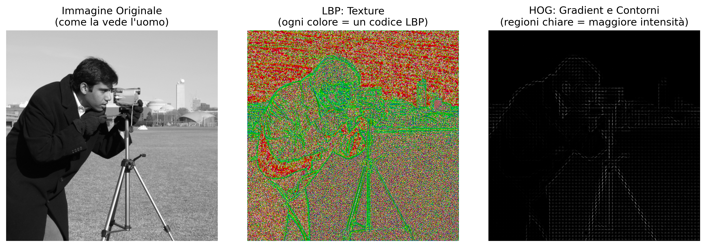
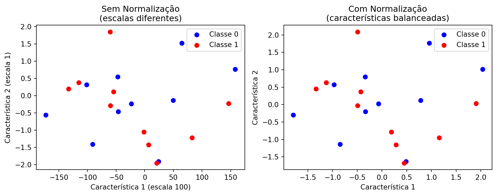
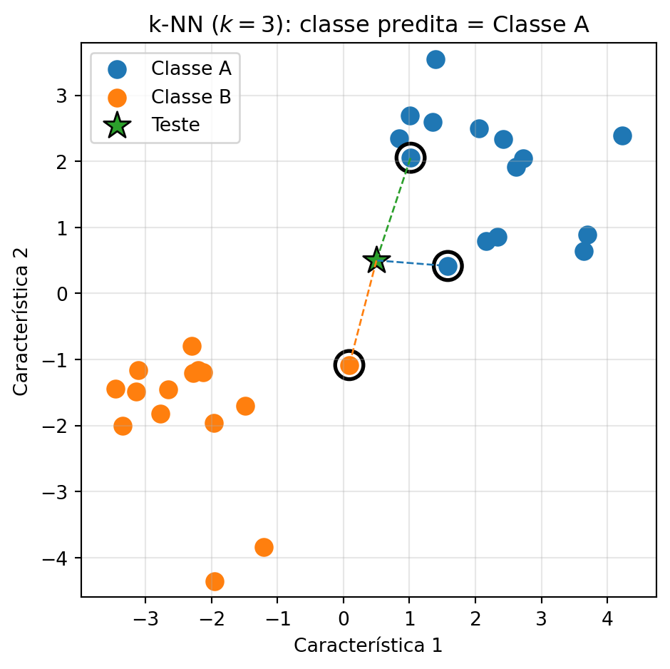
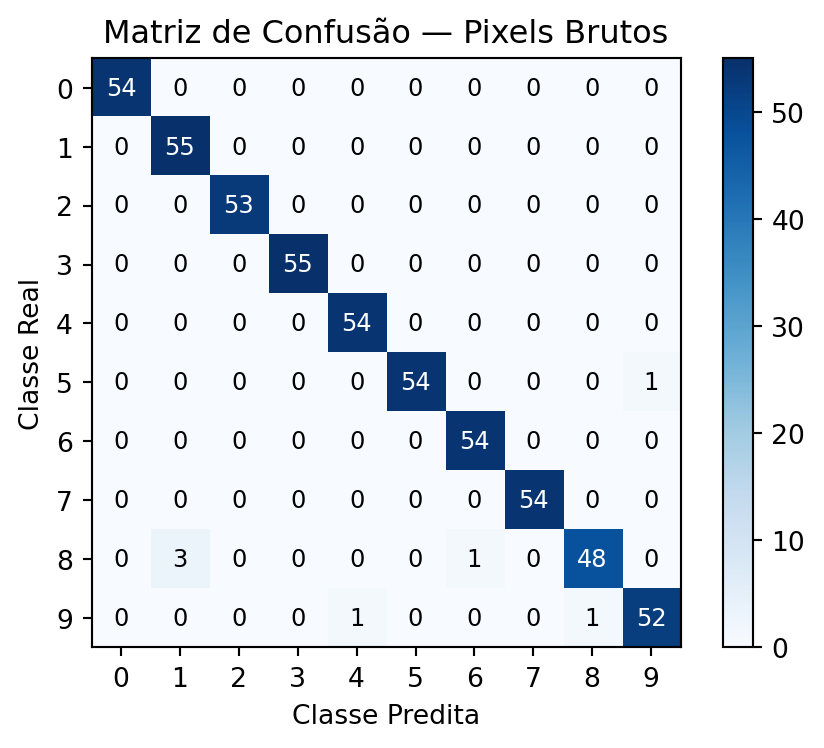
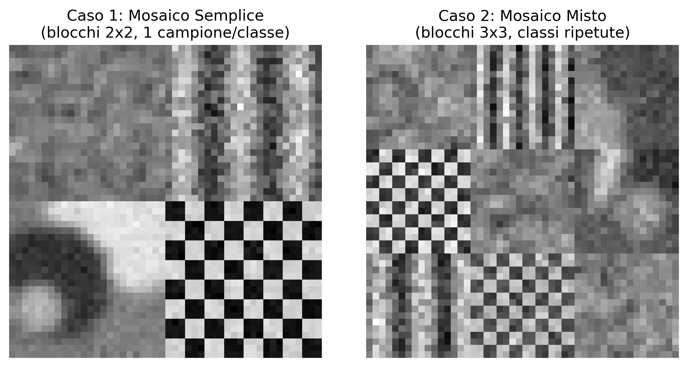

7Classificazione delle Immagini e Riconoscimento di Pattern
Nel Capitolo 6, la transizione dalla Parte I alla Parte II è stata presentata attraverso due applicazioni che richiedevano già decisioni automatizzate: il riconoscimento dei segni nei fogli di risposta (OMR) e il rilevamento dei difetti nell’ispezione industriale. In entrambi i casi, tuttavia, le decisioni dipendevano da regole geometriche e soglie definite manualmente, come determinare se un disco fosse sufficientemente circolare o se una regione fosse abbastanza scura.
Questo capitolo formalizza il problema più generale alla base di queste applicazioni: dato un insieme di esempi etichettati, come addestrare un sistema per classificare automaticamente nuove immagini o regioni di interesse? Questa questione è al centro del Riconoscimento di Pattern, disciplina che fonda gran parte dei compiti moderni della Visione Artificiale, dalla classificazione delle immagini al rilevamento degli oggetti e alla segmentazione semantica, esplorati nei prossimi capitoli.
Verranno studiati i principali descrittori classici dell’immagine (colore, tessitura e forma/gradiente) e il classificatore k-Nearest Neighbors (k-Nearest Neighbors — k-NN), scelto per la sua semplicità concettuale e per evidenziare, in modo diretto, la relazione tra lo spazio delle caratteristiche, le metriche di distanza e le frontiere di decisione — concetti che rimangono centrali anche nei classificatori basati su reti neurali profonde, studiati nel capitolo finale di questa parte.
7.1 Obiettivi del Capitolo
Al termine di questo capitolo, lo studente dovrebbe essere in grado di:
Comprendere il pipeline classico di riconoscimento dei pattern: acquisizione, pre-elaborazione, estrazione dei descrittori, classificazione e valutazione;
Estrarre e interpretare descrittori classici di colore, tessitura (Local Binary Patterns — LBP) e forma/gradiente (Histogram of Oriented Gradients — HOG);
Implementare e addestrare un classificatore k-NN per compiti di classificazione delle immagini;
Valutare i classificatori attraverso metriche come accuratezza, matrice di confusione, precisione e recall;
Analizzare l’effetto del parametro k e della dimensionalità dello spazio delle caratteristiche sulle prestazioni del classificatore;
Riconoscere i limiti dei descrittori artigianali (hand-crafted features) e comprendere la motivazione per la transizione, nei prossimi capitoli, verso descrittori appresi automaticamente.
7.2 Configurazione dell’Ambiente
Gli esempi di questo capitolo utilizzano librerie ampiamente impiegate nell’Elaborazione Digitale delle Immagini, nella Visione Artificiale e nell’Apprendimento Automatico. Il blocco seguente installa i pacchetti necessari; in ambienti che già li possiedono, l’esecuzione può essere ignorata.
import os, urllib.requesturl ="https://raw.githubusercontent.com/fzampirolli/pdi-vc/master/morph/config.py"ifnot os.path.exists("config.py"): urllib.request.urlretrieve(url, "config.py")import configconfig.setup()from morph import mmimport importlibimport subprocessimport sysdef setup_cap07():"""Installa le librerie mancanti necessarie per questo capitolo (visione computazionale e apprendimento automatico).""" pacotes = {"cv2": "opencv-python","skimage": "scikit-image","numpy": "numpy","sklearn": "scikit-learn","matplotlib": "matplotlib","pandas": "pandas","seaborn": "seaborn","tabulate": "tabulate","kaleido": "kaleido", }for modulo, pacote in pacotes.items():if importlib.util.find_spec(modulo) isNone: resultado = subprocess.run( [sys.executable, "-m", "pip", "install", "-q", pacote] )if resultado.returncode !=0:print(f"[AVVISO] Impossibile installare {pacote} (necessario per il modulo {modulo}).")setup_cap07()# ==========================================================# Librerie# ==========================================================# Calcolo scientificoimport numpy as npimport pandas as pd# Visualizzazioneimport matplotlib.cm as cmimport matplotlib.pyplot as pltimport seaborn as sns# Visione computazionaleimport cv2from skimage import data as skdatafrom skimage.feature import hog, local_binary_pattern# Apprendimento automaticofrom sklearn.datasets import load_digits, make_classificationfrom sklearn.model_selection import cross_val_score, train_test_splitfrom sklearn.neighbors import KNeighborsClassifierfrom sklearn.ensemble import RandomForestClassifierfrom sklearn.preprocessing import StandardScalerfrom sklearn.metrics import ( accuracy_score, classification_report, confusion_matrix, f1_score, precision_score, recall_score,)
✅ Ambiente pronto. Morph: 1.1.9 | OpenCV: 5.0.0
7.3 Un Problema Concreto: Classificazione della Frutta
Prima di presentare i fondamenti teorici, si consideri il seguente problema, che verrà utilizzato come esempio lungo tutto questo capitolo per illustrare i principali concetti del riconoscimento di pattern.
Lo scenario: Una fattoria automatizzata utilizza un sistema di Visione Artificiale per separare mele, banane e arance sulle linee di confezionamento.
La sfida: I frutti arrivano sul nastro in diverse posizioni e orientamenti, in condizioni di illuminazione che possono variare. Inoltre, foglie, ombre e piccole occlusioni possono rendere difficile la loro identificazione. Come sviluppare un sistema in grado di classificarli correttamente?
Un possibile approccio:
Estrarre descrittori che rappresentino caratteristiche rilevanti dei frutti:
Colore: distribuzione predominante dei colori;
Texture: differenze nella superficie della buccia;
Forma: caratteristiche geometriche del contorno.
Addestrare un classificatore utilizzando esempi precedentemente etichettati.
Utilizzare il modello addestrato per classificare automaticamente nuovi frutti.
La Figura 7.1 illustra, in modo concettuale, come diversi frutti possano essere rappresentati in uno spazio delle caratteristiche tridimensionale.
ConsiglioRifletti prima di continuare
Se ogni frutto fosse rappresentato solo dai valori di intensità dei suoi pixel, sarebbe possibile distinguerli in modo affidabile? Che tipi di informazioni potrebbero essere estratti dall’immagine per facilitare questo compito?
Figura 7.1: Esempio motivazionale: diversi frutti che formano raggruppamenti distinti in uno spazio delle caratteristiche.
7.4 🗺️ Panoramica del Capitolo: Il Pipeline Classico di Classificazione delle Immagini
Prima di procedere, è utile presentare una visione integrata di ciò che verrà studiato. La Figura 8.1 mostra il flusso generale di un sistema classico di classificazione delle immagini, dall’immagine di input fino alla fase di assegnazione dell’etichetta finale. Nelle prossime sezioni, ciascuna delle fasi di questo processo verrà studiata in dettaglio.
Figura 7.2: Panoramica del pipeline classico di classificazione delle immagini: estrazione dei descrittori (LBP, HOG), formazione dello spazio delle caratteristiche e classificazione tramite k-NN. Non si applica ai modelli di Deep Learning (CNN, YOLO), che apprendono feature end-to-end direttamente dai pixel. Fonte: elaborato con l’ausilio di Gemini Notebook ({GOOGLE}, 2025).
NotaAmbito di questo capitolo
In questo capitolo, l’attenzione ricade esclusivamente sul classificatore k-NN, per la sua semplicità didattica e per illustrare in modo intuitivo il concetto di spazio delle caratteristiche. Altri classificatori tradizionali ampiamente utilizzati nel Riconoscimento di Pattern — come Alberi Decisionali, Regole di Classificazione e Macchine a Vettori di Supporto (SVM) — sono discussi in profondità in Quilici-gonzalez (2014), in particolare nella sua 2ª edizione, attualmente in produzione (QUILICI-GONZALEZ, 2026).
7.5 Fondamenti del Riconoscimento di Pattern
Un sistema di riconoscimento di pattern ha come obiettivo assegnare una categoria (etichetta) a un’osservazione — un’immagine intera, una regione di interesse o un segnale — basandosi su esempi precedentemente etichettati. In generale, questo processo è organizzato nelle seguenti fasi:
Acquisizione: ottenimento dell’immagine o del segnale da classificare;
Pre-elaborazione: normalizzazione, rimozione del rumore, correzione geometrica o dell’illuminazione — fasi già studiate nei capitoli precedenti;
Estrazione di descrittori (feature): trasformazione dell’immagine in un vettore di caratteristiche di dimensione fissa, che rappresenta le proprietà rilevanti per il compito di classificazione;
Classificazione: applicazione di un modello che associa il vettore di caratteristiche a una classe;
Valutazione: analisi delle prestazioni del modello su un insieme di dati indipendente da quello utilizzato per l’addestramento.
L’insieme di tutti i vettori di caratteristiche possibili costituisce lo spazio delle caratteristiche (feature space). Un buon descrittore produce rappresentazioni che avvicinano, in questo spazio, osservazioni della stessa classe e allontanano osservazioni di classi distinte. Questa proprietà favorisce metodi di classificazione basati sulla prossimità, come il k-NN, e avvantaggia anche diversi altri classificatori.
La Figura 7.1 illustra questo concetto in modo schematico: ogni frutto è rappresentato da un punto in uno spazio delle caratteristiche a tre dimensioni (colore, consistenza e forma). Sebbene questo spazio sia solo una semplificazione didattica, esso mostra come i campioni della stessa classe tendano a formare raggruppamenti, mentre classi diverse occupano regioni distinte, facilitando il compito di classificazione.
7.6 Estrazione di Descrittori Classici
Prima della popolarizzazione delle reti neurali profonde, i descrittori di immagine erano, nella maggior parte dei casi, progettati manualmente da esperti (hand-crafted features), sulla base di proprietà statistiche o geometriche note. Tre famiglie classiche sono particolarmente rilevanti:
Descrittori di colore: istogrammi di intensità o di tinta, che catturano la distribuzione dei valori cromatici di una regione, già introdotti nel Capitolo 3 tramite la funzione mm.hist;
Descrittori di texture: catturano pattern locali di ripetizione, rugosità o orientamento, come il Local Binary Patterns (LBP), studiato in seguito;
Descrittori di forma/gradiente: descrivono la distribuzione dei bordi e delle orientazioni del gradiente, come l’Histogram of Oriented Gradients (HOG), ampiamente impiegato nel rilevamento di persone e altri oggetti.
Per confrontare l’informazione catturata da ciascun approccio, la Figura 7.3 mostra come diverse tecniche “vedono” la stessa immagine.
# Caricare immagine di esempioimagem = skdata.camera()# Applicare descrittorilbp_img = local_binary_pattern( imagem, P=8, R=1, method="uniform" )# Convertire l'LBP in RGB solo per facilitare la visualizzazionelbp_norm = (lbp_img - lbp_img.min()) / (lbp_img.max() - lbp_img.min() +1e-8)lbp_rgb = (cm.nipy_spectral(lbp_norm)[..., :3] *255).astype("uint8")hog_features, hog_img = hog( imagem, orientations=9, pixels_per_cell=(8, 8), cells_per_block=(2, 2), visualize=True,)# Visualizzazione standardmm.show( [imagem, lbp_rgb, hog_img], titles=["Immagine Originale\n(come la vede l'uomo)","LBP: Texture\n(ogni colore = un codice LBP)","HOG: Gradient e Contorni\n(regioni chiare = maggiore intensità)", ], cols=3, figsize=(12, 4),)print("Osserva come ogni descrittore evidenzia proprietà diverse:")print("• LBP: evidenzia pattern locali di texture.")print("• HOG: evidenzia contorni e orientamenti dei bordi.")print("• Immagine originale: contiene solo i valori di intensità.")

Figura 7.3: Confronto visivo di diversi descrittori applicati alla stessa immagine. Ogni descrittore rivela aspetti distinti della scena.
Osserva come ogni descrittore evidenzia proprietà diverse:
• LBP: evidenzia pattern locali di texture.
• HOG: evidenzia contorni e orientamenti dei bordi.
• Immagine originale: contiene solo i valori di intensità.
7.6.1Local Binary Patterns (LBP)
L’LBP è un descrittore di tessitura che codifica, per ogni pixel centrale \(g_c\), la relazione tra la sua intensità e quella dei \(P\) vicini disposti in un intorno circolare di raggio \(R\):
\((x_c, y_c)\) sono le coordinate del pixel centrale;
\(g_c\) è l’intensità del pixel centrale;
\(g_p\) è l’intensità del \(p\)-esimo pixel vicino;
\(P\) è il numero di vicini considerati;
\(R\) è il raggio dell’intorno circolare;
\(p\) è l’indice del vicino, con \(p = 0, 1, \ldots, P-1\);
\(s(z)\) è la funzione soglia definita nell’equazione, dove \(z = g_p - g_c\); essa assume valore 1 quando \(z \geq 0\) e 0 quando \(z < 0\);
\(2^p\) corrisponde al peso binario associato al \(p\)-esimo vicino.
Il codice LBP ottenuto descrive il pattern locale di contrasto attorno al pixel. L’istogramma di questi codici forma un vettore di caratteristiche compatto per rappresentare la tessitura dell’immagine (Figura 7.4). In questo capitolo si utilizza la variante uniforme, che raggruppa i pattern non uniformi in un’unica categoria, riducendo la dimensionalità e aumentando la robustezza del descrittore.
Figura 7.4: Istogramma dei codici LBP dell’immagine del cameraman. Ogni barra rappresenta la frequenza relativa di un codice LBP, formando il vettore di caratteristiche utilizzato per descrivere la texture.
ConsiglioFunzione local_binary_pattern
L’implementazione utilizzata in questo capitolo è fornita dalla libreria scikit-image:
P: numero di vicini equidistanti nell’intorno circolare;
R: raggio dell’intorno, in pixel;
method: strategia di codifica. In questo capitolo si utilizza il valore "uniform".
L’equazione presentata in precedenza descrive l’LBP originale. Nell’ implementazione adottata in questo capitolo, l’opzione method="uniform" calcola inizialmente tale codice e, successivamente, rimappa i pattern non uniformi in un’unica categoria, riducendo la dimensionalità del descrittore e rendendolo più robusto a piccole variazioni locali.
La Figura 7.3 presenta la rappresentazione visiva dell’LBP, mentre la Figura 7.4 mostra l’istogramma dei codici LBP utilizzato come vettore di caratteristiche.
Il Progetto Pratico 2 (sezione Confronto di Descrittori per la Classificazione di Trame) impiega l’LBP nella classificazione di diversi tipi di trama sintetica.
7.6.2Histogram of Oriented Gradients (HOG)
L’HOG è un descrittore che rappresenta la forma di un oggetto tramite la distribuzione delle orientazioni del gradiente locale. Come nell’operatore di Canny (Capitolo 6), si calcola inizialmente il gradiente:
\(f(x,y)\) è l’intensità dell’immagine nel pixel \((x,y)\);
\(\frac{\partial f}{\partial x}\) e \(\frac{\partial f}{\partial y}\) sono, rispettivamente, le derivate parziali dell’immagine nelle direzioni orizzontale e verticale;
\(|\nabla f(x,y)|\) è la magnitudine del vettore gradiente nel pixel \((x,y)\), che indica l’intensità della variazione locale dell’immagine;
\(\theta(x,y)\) è l’orientazione del vettore gradiente nel pixel \((x,y)\), calcolata tramite la funzione \(\operatorname{atan2}\), il cui risultato appartiene all’intervallo \((-\pi,\pi]\).
Sebbene \(\theta(x,y)\), come calcolata dalla funzione \(\operatorname{atan2}\), appartenga all’intervallo \((-\pi,\pi]\), l’implementazione standard dell’HOG utilizza il gradiente non firmato (unsigned): orientazioni opposte (ad esempio, \(0\) e \(\pi\)) vengono trattate come equivalenti, e gli angoli vengono mappati nell’intervallo \([0,\pi)\) prima della costruzione dell’istogramma. Questa scelta rende il descrittore invariante alla direzione del contrasto (ad esempio, un bordo chiaro-scuro e un bordo scuro-chiaro producono la stessa orientazione).
L’immagine viene quindi suddivisa in celle (cells). Per ciascuna cella, si costruisce un istogramma delle orientazioni del gradiente, ponderato dalla magnitudine corrispondente. La concatenazione degli istogrammi di tutte le celle forma il vettore di caratteristiche HOG, che rappresenta la distribuzione spaziale delle orientazioni del gradiente e cattura informazioni sulla forma e sui contorni dell’oggetto (Figura 7.5).
n =100plt.figure(figsize=(8, 3))plt.bar(range(n), hog_features[:n], width=0.9)plt.title("Primeiros componentes do vetor HOG")plt.xlabel(f"Índice do componente (0–{n-1}, de um total de {hog_features.shape[0]})")plt.ylabel("Valor normalizado")plt.grid(axis="y", alpha=0.3)plt.tight_layout()plt.show()
Figura 7.5: Primi 100 componenti del vettore di caratteristiche HOG.
ConsiglioFunzione hog
L’estrazione del descrittore HOG è realizzata dalla funzione:
orientations: numero di suddivisioni angolari dell’istogramma delle orientazioni in ogni cella;
pixels_per_cell: dimensione, in pixel, di ogni cella in cui viene calcolato l’istogramma;
cells_per_block: numero di celle utilizzate per la normalizzazione del descrittore;
visualize: quando True, restituisce anche un’immagine che illustra i gradienti utilizzati dall’HOG.
L’equazione presentata in precedenza descrive il calcolo della magnitudine e dell’orientazione del gradiente, che costituiscono la base del descrittore HOG. Nell’implementazione adottata in questo capitolo, la funzione hog() utilizza queste informazioni per costruire istogrammi delle orientazioni in ogni cella dell’immagine e, successivamente, esegue la normalizzazione a blocchi (cells_per_block), riducendo la sensibilità del descrittore alle variazioni di illuminazione e contrasto.
La Figura 7.3 presenta la rappresentazione visiva dell’HOG, mentre la Figura 7.5 illustra le prime componenti del vettore di caratteristiche estratto dall’immagine.
Il Progetto Pratico 1 (sezione Classificazione di Cifre Manoscritte con k-NN) confronta le prestazioni dei descrittori HOG con l’uso diretto delle intensità dei pixel come vettore di caratteristiche.
7.6.3 L’Impatto della Scala e la Normalizzazione delle Caratteristiche
Il classificatore \(k\)-NN prende le sue decisioni basandosi sulla distanza tra i vettori di caratteristiche. Per questo motivo, la scala di ciascuna caratteristica influenza direttamente il risultato della classificazione. Se una variabile presenta valori molto maggiori rispetto alle altre (ad esempio, un’ intensità di colore che varia da \(0\) a \(255\), mentre un indice di circolarità varia da \(0\) a \(1\)), essa tende a dominare il calcolo della distanza, riducendo l’influenza degli altri descrittori.
Per evitare questo problema, si applica una fase di normalizzazione delle caratteristiche, generalmente tramite la standardizzazione (Z-score standardization). In questa procedura, ciascuna caratteristica assume media pari a zero e deviazione standard pari a uno, rendendo comparabili grandezze originariamente misurate su scale diverse.
La standardizzazione viene effettuata tramite la trasformazione
\[
z = \frac{x - \mu}{\sigma},
\]
in cui:
\(x\) è il valore originale della caratteristica;
\(\mu\) è la media di tale caratteristica calcolata sull’insieme di addestramento;
\(\sigma\) è la deviazione standard della caratteristica;
\(z\) è il valore standardizzato.
Dopo questa trasformazione, tutte le caratteristiche possiedono media pari a zero e deviazione standard pari a uno, consentendo loro di contribuire in modo equilibrato al calcolo delle distanze.
ConsiglioClasse StandardScaler
La standardizzazione utilizzata in questo capitolo viene effettuata tramite la classe StandardScaler, della libreria scikit-learn:
from sklearn.preprocessing import StandardScalerscaler = StandardScaler()X_norm = scaler.fit_transform(X)
in cui:
StandardScaler(): crea l’oggetto responsabile della standardizzazione;
fit_transform(X): calcola la media e la deviazione standard di ciascuna caratteristica dell’insieme X e restituisce la matrice standardizzata.
In pratica, il metodo fit_transform() esegue due fasi: prima (fit), stima la media (\(\mu\)) e la deviazione standard (\(\sigma\)) di ogni caratteristica; successivamente (transform), applica la trasformazione di standardizzazione presentata in precedenza a tutti i valori della matrice di input.
La Figura 7.6 mostra l’effetto della normalizzazione. Visivamente, la distribuzione dei punti rimane la stessa; ciò che cambia è la scala degli assi. Senza normalizzazione, la caratteristica di maggiore magnitudine domina il calcolo delle distanze tra i campioni. Dopo la standardizzazione, tutte le caratteristiche contribuiscono in modo equilibrato al calcolo delle distanze utilizzate dal classificatore \(k\)-NN.
# Dati sintetici con scale molto diversenp.random.seed(42)X_demo = np.random.randn(20, 2) * [100, 1]y_demo = np.array([0] *10+ [1] *10)print("Effetto della normalizzazione:")print(" Caratteristica 1: scala ≈ 100")print(" Caratteristica 2: scala ≈ 1")print("\nSenza normalizzazione, la prima caratteristica domina il calcolo delle distanze.")print("Con la normalizzazione, entrambe contribuiscono in modo equilibrato.")print("\nLa normalizzazione è essenziale quando le caratteristiche hanno scale diverse.")fig, axes = plt.subplots(1, 2, figsize=(10, 4))# Senza normalizzazioneaxes[0].scatter( X_demo[y_demo ==0, 0], X_demo[y_demo ==0, 1], c="blue", label="Classe 0")axes[0].scatter( X_demo[y_demo ==1, 0], X_demo[y_demo ==1, 1], c="red", label="Classe 1")axes[0].set_title("Sem Normalização\n(escalas diferentes)")axes[0].set_xlabel("Característica 1 (escala 100)")axes[0].set_ylabel("Característica 2 (escala 1)")axes[0].legend()# Con normalizzazionescaler = StandardScaler()X_norm = scaler.fit_transform(X_demo)axes[1].scatter( X_norm[y_demo ==0, 0], X_norm[y_demo ==0, 1], c="blue", label="Classe 0")axes[1].scatter( X_norm[y_demo ==1, 0], X_norm[y_demo ==1, 1], c="red", label="Classe 1")axes[1].set_title("Com Normalização\n(características balanceadas)")axes[1].set_xlabel("Característica 1")axes[1].set_ylabel("Característica 2")axes[1].legend()plt.tight_layout()plt.show()
Effetto della normalizzazione:
Caratteristica 1: scala ≈ 100
Caratteristica 2: scala ≈ 1
Senza normalizzazione, la prima caratteristica domina il calcolo delle distanze.
Con la normalizzazione, entrambe contribuiscono in modo equilibrato.
La normalizzazione è essenziale quando le caratteristiche hanno scale diverse.

Figura 7.6: Importanza della normalizzazione delle caratteristiche per il classificatore k-NN.
7.7 📌 Mappa Concettuale
Fino a qui sono stati presentati i descrittori classici (LBP, HOG, pixel grezzi) e il modo in cui organizzano i campioni in uno spazio delle caratteristiche. La Figura 7.7 sintetizza questo percorso e colloca tali fasi all’interno del flusso generale di un sistema classico di classificazione delle immagini, indicando anche le fasi successive — classificazione (k-NN) e valutazione dei risultati — che verranno formalizzate nelle sezioni seguenti.
Figura 7.7: Mappa concettuale del processo di classificazione delle immagini utilizzando descrittori classici (LBP, HOG, pixel grezzi) e classificatore tradizionale (k-NN). Non si applica a modelli di Apprendimento Profondo (CNN, YOLO), che apprendono feature end-to-end direttamente dai pixel.
7.8 Descrittori nella Pratica
Dopo aver conosciuto i principali descrittori classici, è naturale chiedersi come essi influenzino le prestazioni di un classificatore in situazioni vicine a quelle riscontrabili nella pratica.
In questa sezione, si confronta l’uso di tre diverse rappresentazioni delle stesse immagini: intensità dei pixel, descrittori LBP e descrittori HOG. Per rendere l’esperimento più realistico, si aggiunge rumore sintetico ai dati, con intensità diverse per ciascun descrittore — una forma semplificata di simulare il fatto che, nella pratica, diverse rappresentazioni tollerano in modo diseguale le imperfezioni dell’acquisizione (rumore del sensore, piccole variazioni di posizione, ecc.).
La Figura 7.8 presenta le matrici di confusione ottenute per ciascun descrittore, consentendo di identificare in quali classi si verificano i principali errori di classificazione. L’interpretazione di queste matrici è stata introdotta nel Capitolo 1, quando sono stati presentati i concetti di Vero Positivo (VP), Falso Positivo (FP), Vero Negativo (VN) e Falso Negativo (FN). Questi concetti sono stati approfonditi negli EP 01_02 (metriche di classificazione) e 01_03 (mean Average Precision – mAP), disponibili su:
In questo capitolo, le matrici di confusione sono impiegate per analizzare come diversi descrittori influenzino le prestazioni del classificatore.
Successivamente, la Figura 7.9 riassume l’accuratezza globale ottenuta da ciascun descrittore.
I risultati mostrano che le prestazioni del classificatore dipendono direttamente dalla rappresentazione scelta per descrivere le immagini. Mentre l’uso diretto delle intensità dei pixel è più sensibile alle degradazioni introdotte, i descrittori LBP e HOG preservano meglio le informazioni rilevanti per la classificazione, risultando in maggiori prestazioni in questo scenario. È importante sottolineare che i livelli di rumore applicati a ciascun descrittore sono stati scelti solo a scopo didattico, in modo da illustrare il principio generale secondo cui descrittori più elaborati possono essere più robusti alle degradazioni — il che non significa che questa relazione si verifichi sempre, come dimostrerà il caso di studio della prossima sezione.
ConsiglioCome viene eseguito l’esperimento
Poiché l’obiettivo di questa sezione è confrontare esclusivamente l’effetto dei descrittori, viene generato un insieme di dati sintetico semplice: tre nubi di punti gaussiani, centrati sugli stessi valori di “colore, texture e forma” già utilizzati nella Figura 7.1 — lo stesso schema impiegato fin dall’inizio del capitolo per rappresentare le tre classi di frutta.
centri: dizionario con il punto medio di ciascuna classe nello spazio delle caratteristiche (colore, texture, forma);
n_per_classe: numero di campioni generati per classe;
np.random.normal(centro, 0.12, (n_per_classe, 3)): genera n_per_classe campioni attorno a ciascun centro, con deviazione standard 0,12 in ogni dimensione;
np.repeat(list(centri.keys()), n_per_classe): genera il vettore delle etichette corrispondenti, nello stesso ordine dei centri.
Successivamente, si utilizza il flusso di addestramento e valutazione:
train_test_split(X, y, test_size=0.3): divide i dati in addestramento (70%) e test (30%);
KNeighborsClassifier(n_neighbors=5): crea un classificatore \(k\)-NN con \(k=5\) vicini;
fit(X_train, y_train): adatta il modello ai dati di addestramento;
confusion_matrix(y_test, y_pred): genera la matrice di confusione.
In questo esperimento, il set di addestramento, il classificatore e il metodo di valutazione rimangono esattamente gli stessi. L’unica differenza tra gli esperimenti è la rappresentazione utilizzata per ciascuna immagine (pixel grezzi, LBP o HOG), consentendo di valutare esclusivamente l’influenza del descrittore sulle prestazioni del classificatore.
classes = ["Maçã", "Banana", "Laranja"]np.random.seed(42)# Stessi centri di classe (colore, consistenza, forma) utilizzati nel# esempio precedente, ora riutilizzati per generare i dati# sintetici di addestramento e test di questo esperimento.centros = {"Maçã": [0.8, 0.2, 0.9],"Banana": [0.3, 0.1, 0.2],"Laranja": [0.9, 0.8, 0.8],}n_por_classe =100X = np.vstack([ np.random.normal(centro, 0.12, (n_por_classe, 3))for centro in centros.values()])y = np.repeat(list(centros.keys()), n_por_classe)# Simulare descrittori con diversi livelli di sensibilità al rumore.# Maggiore è il rumore aggiunto, peggiore tende a essere la rappresentazione.descritores = {"Pixels Brutos": X +0.5* np.random.randn(*X.shape),"LBP": X +0.3* np.random.randn(*X.shape),"HOG": X +0.2* np.random.randn(*X.shape),}# Creare un'unica figura con 3 sottotrame affiancate per le matricifig, axes = plt.subplots(1, 3, figsize=(14, 4))resultados = {}for idx, (nome, Xd) inenumerate(descritores.items()): X_train, X_test, y_train, y_test = train_test_split(Xd, y, test_size=0.3, random_state=42) knn = KNeighborsClassifier(n_neighbors=5) knn.fit(X_train, y_train) y_pred = knn.predict(X_test) acc = accuracy_score(y_test, y_pred) resultados[nome] = acc# Matrice di confusione nel sottotrama corrispondente cm = confusion_matrix(y_test, y_pred, labels=classes) sns.heatmap( cm, annot=True, fmt="d", cmap="Blues", cbar=False, xticklabels=classes, yticklabels=classes, ax=axes[idx], ) axes[idx].set_title(f"{nome}\nAcurácia: {acc:.3f}", fontsize=11, fontweight="bold" ) axes[idx].set_xlabel("Classe Predita") axes[idx].set_ylabel("Classe Real")plt.tight_layout()plt.show()
Figura 7.8: Matrici di confusione ottenute dal classificatore k-NN utilizzando tre descrittori diversi. Le righe rappresentano la classe reale (Mela, Banana e Arancia) e le colonne la classe predetta. Maggiore è la concentrazione di valori sulla diagonale principale, migliore è la prestazione del descrittore.
# Confronto visivo in una figura isolataplt.figure(figsize=(6, 3.5))nomes =list(resultados.keys())acuracia =list(resultados.values())colors = ['#6366f1', '#f97316', '#22c55e']bars = plt.bar(nomes, acuracia, color=colors, width=0.5)plt.ylabel('Acurácia Global')plt.title('Desempenho Geral dos Descritores sob Ruído Realista', fontsize=12, fontweight='bold')plt.ylim(0.5, 1.0)plt.grid(axis='y', linestyle='--', alpha=0.5)# Aggiungere i valori sopra le barre usando il round standard per la visualizzazionefor bar, val inzip(bars, acuracia): plt.text(bar.get_x() + bar.get_width()/2, bar.get_height() +0.01,f'{val:.3f}', ha='center', fontweight='bold', fontsize=10)plt.tight_layout()plt.show()print("Analisi dei risultati:")print("- Pixel Grezzi: Sensibili a variazioni locali di illuminazione e rumore.")print("- LBP: Buona tolleranza per variazioni monotoniche dell'illuminazione globale.")print("- HOG: Eccellente per contorni e forme stabili sotto piccole fluttuazioni geometriche.")
Figura 7.9: Confronto dettagliato dell’accuratezza globale in uno scenario realistico. Si noti come i descrittori estratti strutturalmente (LBP e HOG) superino l’uso delle intensità pure dei pixel grezzi.
Analisi dei risultati:
- Pixel Grezzi: Sensibili a variazioni locali di illuminazione e rumore.
- LBP: Buona tolleranza per variazioni monotoniche dell'illuminazione globale.
- HOG: Eccellente per contorni e forme stabili sotto piccole fluttuazioni geometriche.
7.9 Un Problema Concreto: Simulando Descrittori di Frutta
Riprendendo il problema di classificazione della frutta presentato all’inizio del capitolo, ogni immagine può essere rappresentata da un vettore di caratteristiche (feature vector) ottenuto tramite l’estrazione di descrittori di colore, texture e forma. La Tabella 7.1 presenta alcuni descrittori frequentemente utilizzati nelle applicazioni di Visione Computazionale, incluse tecniche introdotte nel Capitolo 3 e in questo capitolo.
Tabella 7.1: Insieme di descrittori cromatici, testurali e geometrici utilizzati per rappresentare immagini di frutta.
Caratteristica
Descrizione
R, G, B
intensità media dei canali rosso, verde e blu
NC
intensità media in livelli di grigio (grayscale)
LBP
descrittore di texture (Local Binary Pattern)
HOG
descrittore di forma (Histogram of Oriented Gradients)
Area
numero di pixel dell’oggetto
Perimetro
lunghezza del contorno
Circolarità
misura di quanto è circolare l’oggetto
Rapporto larghezza/altezza
proporzione tra larghezza e altezza della regione
In questo esempio, ogni immagine è rappresentata dal vettore
Nella pratica, LBP e HOG non sono valori scalari, ma istogrammi con decine o centinaia di componenti. In questa sezione, ciascuno di essi è rappresentato da un unico valore solo per semplificare la presentazione. Nelle applicazioni reali, queste posizioni sarebbero sostituite dalle componenti complete dei rispettivi istogrammi.
Nelle applicazioni reali, non tutti i descrittori contribuiscono in egual misura a distinguere le classi. Alcuni forniscono informazioni più rilevanti, mentre altri possono essere ridondanti o poco discriminativi.
Per riprodurre questo scenario in modo controllato, si utilizzerà make_classification(), dalla libreria scikit-learn. La funzione genera un insieme di dati sintetico le cui caratteristiche possono essere interpretate come descrittori di immagini, consentendo di definire quante di esse saranno informative per la classificazione.
In questo esempio, vengono generate dieci caratteristiche sintetiche, delle quali solo sette (n_informative=7) partecipano alla separazione tra le tre classi. Le restanti simulano attributi poco informativi o ridondanti. La Figura 7.10 presenta una rappresentazione concettuale di tale processo.
Prima di introdurre l’algoritmo che sarà studiato in dettaglio in questo capitolo, è opportuna un’osservazione: per identificare, tra le dieci caratteristiche sintetiche, quali siano più discriminative — e quindi selezionarne due per la visualizzazione 2D —, si utilizza un Random Forest solo come strumento ausiliario di diagnosi. Il KNN, focus di questo capitolo, viene presentato di seguito.
# Configurazione per la riproduzionenp.random.seed(42)# Generazione di dati sintetici con caratteristiche controllateX, y = make_classification( n_samples=300, n_features=10, n_informative=7, n_redundant=2, n_repeated=1, # Una caratteristica è copia di un'altra n_classes=3, n_clusters_per_class=1, random_state=42,)# Creare figura con due sottotramefig, (ax1, ax2) = plt.subplots(1, 2, figsize=(14, 5))# Sottotrama 1: Visualizzazione delle classi in 2D (usando due caratteristiche informative)# Identificare quali caratteristiche sono più informativerf = RandomForestClassifier(n_estimators=100, random_state=42)rf.fit(X, y)importancias = rf.feature_importances_caracteristicas_informativas = np.argsort(importancias)[-2:] # Le due più importanticores = {0: "#e74c3c", 1: "#f1c40f", 2: "#e67e22"} # Mela, Banana, Aranciarotulos = {0: "Maçã", 1: "Banana", 2: "Laranja"}for classe inrange(3): idx = y == classe ax1.scatter(X[idx, caracteristicas_informativas[0]], X[idx, caracteristicas_informativas[1]], c=cores[classe], label=rotulos[classe], alpha=0.6, s=50, edgecolors="white", linewidth=0.5)ax1.set_xlabel(f"Característica {caracteristicas_informativas[0]+1} (informativa)", fontsize=11)ax1.set_ylabel(f"Característica {caracteristicas_informativas[1]+1} (informativa)", fontsize=11)ax1.set_title("Classes no Espaço de Características\n(2 características informativas)", fontsize=12, fontweight="bold")ax1.legend(loc="upper right")ax1.grid(alpha=0.3)# Sottotrama 2: Importanza delle caratteristichebars = ax2.bar(range(1, 11), importancias, color="#4a90d9", alpha=0.7)ax2.set_xlabel("Índice da Característica", fontsize=11)ax2.set_ylabel("Importância", fontsize=11)ax2.set_title("Importância de cada Característica\npara a Classificação", fontsize=12, fontweight="bold")ax2.set_xticks(range(1, 11))ax2.grid(axis="y", alpha=0.3)# Colorare le barre per evidenziare le caratteristichecores_barras = ["#e74c3c"if i <7else"#95a5a6"for i inrange(10)]for bar, cor inzip(bars, cores_barras): bar.set_color(cor)# Aggiungere legendafrom matplotlib.patches import Patchlegenda_elements = [ Patch(facecolor="#e74c3c", label="Características Informativas (7)"), Patch(facecolor="#95a5a6", label="Características Redundantes (3)")]ax2.legend(handles=legenda_elements, loc="upper right")# Annotare il numero di caratteristiche informativeax2.axhline(y=0.15, color="red", linestyle="--", alpha=0.3)ax2.text(0.5, 0.17, "Limiar de importância", fontsize=9, color="red", alpha=0.7)plt.tight_layout()plt.show()print("\n🔍 Analisi dei dati generati:")print(f" • Totale dei campioni: {X.shape[0]}")print(f" • Numero di caratteristiche: {X.shape[1]}")print(f" • Caratteristiche informative: 7 (colonne da 1 a 7 del grafico)")print(f" • Caratteristiche ridondanti: 2 (colonne 8 e 9)")print(f" • Caratteristiche ripetute: 1 (colonna 10)")print(f" • Distribuzione delle classi: {np.bincount(y)}")
Figura 7.10: Illustrazione del processo di generazione di dati sintetici con make_classification. A sinistra, visualizzazione delle tre classi in uno spazio bidimensionale formato da due caratteristiche informative. A destra, importanza relativa di ciascuna caratteristica per la classificazione, evidenziando che solo 7 delle 10 caratteristiche sono effettivamente discriminative, mentre le altre sono ridondanti (2) o ripetute (1).
🔍 Analisi dei dati generati:
• Totale dei campioni: 300
• Numero di caratteristiche: 10
• Caratteristiche informative: 7 (colonne da 1 a 7 del grafico)
• Caratteristiche ridondanti: 2 (colonne 8 e 9)
• Caratteristiche ripetute: 1 (colonna 10)
• Distribuzione delle classi: [101 98 101]
7.10 Classificatore k-NN: Come Funziona Internamente
Il k-Nearest Neighbors (k-NN) è uno degli algoritmi di classificazione più semplici e intuitivi dell’Apprendimento Automatico. A differenza di molti classificatori, non costruisce esplicitamente un modello durante la fase di addestramento. Invece, memorizza i campioni etichettati e, quando un nuovo campione deve essere classificato, cerca quelli che più gli somigliano.
Il principio dell’algoritmo si basa sull’ipotesi che campioni con caratteristiche simili tendano ad appartenere alla stessa classe. Per quantificare questa vicinanza, il k-NN utilizza una misura di distanza tra i vettori di caratteristiche.
Come esempio, si consideri la Tabella 7.2, che presenta una versione semplificata del problema di classificazione della frutta utilizzando solo due caratteristiche: intensità del colore e circolarità, entrambe normalizzate nell’intervallo da 0 a 1.
Tabella 7.2: Esempio semplificato di classificazione della frutta utilizzando due caratteristiche normalizzate.
Campione
Colore
Circolarità
Classe
Frutta 1
0,82
0,88
Mela
Frutta 2
0,30
0,20
Banana
Frutta 3
0,88
0,85
Mela
Frutta ? (test)
0,80
0,90
?
Osservando solo queste due caratteristiche, si nota che la frutta di test è molto più vicina ai campioni etichettati come Mela che al campione etichettato come Banana. Nella sezione successiva, questa nozione intuitiva di vicinanza sarà formalizzata tramite una metrica di distanza, utilizzata dall’algoritmo per identificare i vicini più prossimi e decidere la classe del nuovo campione.
7.10.1 Metrica di Distanza
La prossimità tra due campioni è normalmente quantificata dalla distanza euclidea, definita da
\(x_j\) e \(x_{i,j}\) rappresentano la \(j\)-esima caratteristica.
Nell’implementazione di questo capitolo, \(x\) corrisponde a una riga di X_test e \(x_i\) a una riga di X_train. Il metodo predict() calcola automaticamente la distanza tra \(x\) e tutti i campioni di addestramento.
dove \(y_i\) è l’etichetta del campione \(x_i\) e \(\hat y\) è la classe assegnata al campione di test.
Nell’esempio, per \(k=3\), i vicini sono Frutto 1 (Mela), Frutto 3 (Mela) e Frutto 2 (Banana). Poiché Mela riceve due voti, questa è la classe prevista.
ConsiglioClasse KNeighborsClassifier
In questo capitolo, l’algoritmo viene implementato con la classe KNeighborsClassifier, della libreria scikit-learn:
from sklearn.neighbors import KNeighborsClassifierknn = KNeighborsClassifier(n_neighbors=3)knn.fit(X_train, y_train)y_pred = knn.predict(X_test)
dove:
KNeighborsClassifier(n_neighbors=3): definisce il valore di \(k\);
fit(X_train, y_train): memorizza i campioni di addestramento (X_train) e le loro etichette (y_train);
predict(X_test): restituisce le classi previste per i campioni di X_test.
Internamente, predict() esegue le fasi descritte in precedenza: calcola le distanze, identifica i \(k\) vicini più prossimi e determina la classe per votazione a maggioranza.
La Figura 7.11 illustra questa procedura in un insieme bidimensionale. La figura evidenzia i vicini utilizzati nella classificazione, mentre la console presenta le fasi dell’algoritmo: calcolo delle distanze, ordinamento, selezione dei vicini, votazione e previsione della classe.
def knn_passo_a_passo(X, y, x, k=3):"""Esegue le cinque fasi dell'algoritmo k-NN. Parametri: X (addestramento), y (etichette), x (test) e k (numero di vicini). """# 1. Distanze dist = [(np.linalg.norm(x-xi), yi, i) for i, (xi, yi) inenumerate(zip(X, y))]print(f"1. Distanze calcolate: {len(dist)}")# 2. Ordinamento dist.sort(key=lambda t: t[0])print("2. Distanze ordinate")# 3. Selezione vizinhos = dist[:k]print(f"3. {k} vicini più prossimi:")for d, c, _ in vizinhos:print(f" {d:.4f} → {c}")# 4. Votazione votos = {}for _, c, _ in vizinhos: votos[c] = votos.get(c, 0) +1print("4. Voti:", votos)# 5. Decisione classe =max(votos, key=votos.get)print("5. Classe prevista:", classe)return classe, vizinhos# Dati di esempionp.random.seed(4)X = np.r_[np.random.randn(15,2)+[2,2], np.random.randn(15,2)+[-2,-2]]y = np.array(["Classe A"]*15+ ["Classe B"]*15)x = np.array([0.5,0.5])classe, vizinhos = knn_passo_a_passo(X, y, x)# Visualizzazioneplt.figure(figsize=(5,5))for c, rotulo in [("Classe A","Classe A"), ("Classe B","Classe B")]: P = X[y==c] plt.scatter(P[:,0], P[:,1], s=80, label=rotulo)plt.scatter(*x, marker="*", s=220, edgecolors="black", label="Teste")for _, _, i in vizinhos: plt.scatter(*X[i], s=220, facecolors="none", edgecolors="black", linewidths=2) plt.plot([x[0], X[i,0]], [x[1], X[i,1]], "--", lw=1)plt.xlabel("Característica 1")plt.ylabel("Característica 2")plt.title(f"k-NN ($k=3$): classe predita = {classe}")plt.legend()plt.grid(alpha=.3)plt.axis("equal")plt.tight_layout()plt.show()
1. Distanze calcolate: 30
2. Distanze ordinate
3. 3 vicini più prossimi:
1.0850 → Classe A
1.6379 → Classe B
1.6382 → Classe A
4. Voti: {np.str_('Classe A'): 2, np.str_('Classe B'): 1}
5. Classe prevista: Classe A

Figura 7.11: Classificazione di un nuovo campione tramite l’algoritmo k-NN. Il punto di test (stella) viene classificato in base ai tre vicini più prossimi, evidenziati da cerchi.
7.10.3 Il Ruolo del Parametro \(k\)
Il parametro \(k\) determina quanti vicini partecipano alla decisione di classificazione.
Valori piccoli di \(k\) (ad esempio, \(k=1\)) rendono il classificatore più sensibile a rumori e variazioni locali, producendo frontiere di decisione più irregolari e favorendo l’overfitting.
Valori maggiori di \(k\) producono frontiere di decisione più morbide, ma possono ridurre la sensibilità a strutture locali, favorendo l’underfitting.
In problemi con due classi, è comune utilizzare valori dispari di \(k\) per ridurre l’occorrenza di pareggi.
Un altro aspetto importante è la maledizione della dimensionalità (curse of dimensionality). Man mano che il numero di caratteristiche aumenta, le distanze tra i campioni tendono a diventare più simili, rendendo difficile l’identificazione di vicini realmente rappresentativi.
NotaRiepilogo
L’algoritmo k-NN può essere riassunto in tre fasi:
estrarre il vettore di caratteristiche del nuovo campione;
identificare i \(k\) vicini più prossimi;
classificare il campione tramite la classe più frequente tra questi vicini.
Il simulatore della Figura 7.12 consente di esplorare visivamente l’effetto del parametro \(k\) sulla frontiera di decisione.
📌 Simulatore: Frontiera di Decisione del k-NNClicca sul canvas per aggiungere punti
Vicini (k)
3
Classe Blu
0
Classe Rossa
0
Classe Blu
Classe Rossa
La regione colorata di sfondo rappresenta la classe assegnata dall'algoritmo a ogni punto dello spazio.
Figura 7.12: Simulatore interattivo della frontiera di decisione del k-NN: aggiungi punti di addestramento e regola il valore di k per osservare l’effetto sulla regione di decisione.
7.11 Progetto Pratico 1: Classificazione di Cifre Scritte a Mano con k-NN
Le sezioni precedenti hanno presentato l’algoritmo k-NN attraverso un esempio semplificato di classificazione della frutta, utilizzando solo due caratteristiche. Di seguito, lo stesso algoritmo viene applicato a un insieme di dati di immagini, in cui ciascun campione è rappresentato da un vettore di dimensione maggiore.
Come caso di studio, si utilizza la base pubblica load_digits, messa a disposizione dalla libreria scikit-learn. Questo insieme di dati contiene 1797 immagini di cifre scritte a mano appartenenti alle classi da 0 a 9, ciascuna con una risoluzione di \(8 \times 8\) pixel in scala di grigi. Ogni immagine è rappresentata da un vettore con 64 caratteristiche, corrispondenti alle intensità dei pixel, e ogni vettore possiede un’etichetta che indica la cifra corrispondente.
La base load_digits è messa a disposizione dalla libreria scikit-learn e viene utilizzata in questo capitolo per illustrare l’applicazione dell’algoritmo k-NN. Oltre a essere disponibile direttamente in scikit-learn, essa non richiede fasi aggiuntive di acquisizione e preparazione dei dati, consentendo di concentrare l’attenzione sull’implementazione e sulla valutazione del classificatore.
La Figura 7.13 presenta un campione delle immagini della base di dati.
digits = load_digits()print(f"Totale dei campioni: {digits.data.shape[0]}, dimensione del vettore: {digits.data.shape[1]}")print(f"Classi: {[int(i) for i insorted(set(digits.target))]}")n_amostras =16imgs =list(digits.images[:n_amostras])imgs_titles = [str(label) for label in digits.target[:n_amostras]]mm.show(imgs, titles=imgs_titles, cols=8, figsize=(12, 4))
Totale dei campioni: 1797, dimensione del vettore: 64
Classi: [0, 1, 2, 3, 4, 5, 6, 7, 8, 9]
Figura 7.13: Campione di cifre scritte a mano dalla base load_digits, utilizzato come caso di studio di classificazione.
7.11.1 Classificazione con Vettori di Intensità
In questo primo esperimento, ogni immagine di dimensione \(8 \times 8\) è rappresentata direttamente dalle intensità dei suoi 64 pixel, senza l’estrazione di descrittori aggiuntivi. Pertanto, ogni campione corrisponde a un vettore di 64 caratteristiche, utilizzato come input del classificatore k-NN.
Successivamente, il set di dati viene suddiviso in sottoinsiemi di training e test, preservando la proporzione delle dieci classi tramite il parametro stratify=y. Il classificatore viene addestrato con \(k=3\) e valutato sul set di test utilizzando l’accuratezza e la matrice di confusione presentata nella Figura 7.14..
X, y = digits.data, digits.targetX_treino, X_teste, y_treino, y_teste = train_test_split( X, y, test_size=0.3, random_state=42, stratify=y)n_neighbors =3knn_pixels = KNeighborsClassifier(n_neighbors=n_neighbors)knn_pixels.fit(X_treino, y_treino)pred_pixels = knn_pixels.predict(X_teste)acc_pixels = accuracy_score(y_teste, pred_pixels)print(f"Accuratezza (vettori di intensità, k={n_neighbors}): {acc_pixels:.4f}")cm = confusion_matrix(y_teste, pred_pixels)plt.figure(figsize=(5,4))plt.imshow(cm, cmap="Blues")for i inrange(cm.shape[0]):for j inrange(cm.shape[1]): plt.text( j, i, cm[i, j], ha="center", va="center", color="white"if cm[i, j] > cm.max()/2else"black", fontsize=9 )plt.title("Matriz de Confusão — Pixels Brutos")plt.xlabel("Classe Predita")plt.ylabel("Classe Real")plt.xticks(range(10))plt.yticks(range(10))plt.colorbar(fraction=0.046)plt.tight_layout()plt.show()
Accuratezza (vettori di intensità, k=3): 0.9870

Figura 7.14: Matrice di confusione del classificatore k-NN addestrato con vettori di intensità grezzi (pixel).
7.11.2 Classificazione con descrittori HOG
Nell’esperimento precedente, ogni immagine è stata rappresentata direttamente dalle intensità dei suoi pixel. In questa sezione, tale rappresentazione viene sostituita da descrittori HOG (Histogram of Oriented Gradients), che codificano informazioni sulla distribuzione delle orientazioni dei gradienti dell’immagine.
Si mantengono la stessa suddivisione dei dati, lo stesso classificatore k-NN e lo stesso protocollo di valutazione, modificando solo la rappresentazione delle immagini. La Figura 7.15 confronta i risultati ottenuti con vettori di intensità e con descrittori HOG.
descritores_hog = np.array([ hog(img, orientations=8, pixels_per_cell=(4, 4), cells_per_block=(1, 1))for img in digits.images])print(f"Dimensione del vettore HOG: {descritores_hog.shape[1]}")Xh_treino, Xh_teste, yh_treino, yh_teste = train_test_split( descritores_hog, y, test_size=0.3, random_state=42, stratify=y)n_neighbors =3knn_hog = KNeighborsClassifier(n_neighbors=n_neighbors)knn_hog.fit(Xh_treino, yh_treino)pred_hog = knn_hog.predict(Xh_teste)acc_hog = accuracy_score(yh_teste, pred_hog)print(f"Accuratezza (descrittore HOG, k={n_neighbors}): {acc_hog:.4f}")plt.figure(figsize=(4, 3))plt.bar(["Pixels brutos", "HOG"], [acc_pixels, acc_hog], color=["#6366f1", "#f97316"])plt.ylim(0, 1.1) # Aumenta il limite superiore per dare spazioplt.ylabel("Acurácia")plt.title("Comparação de Descritores")for i, v inenumerate([acc_pixels, acc_hog]): plt.text(i, v +0.02, f"{v:.3f}", ha="center") # Aumenta lo spostamento verticaleplt.tight_layout()
Dimensione del vettore HOG: 32
Accuratezza (descrittore HOG, k=3): 0.7593
Figura 7.15: Confronto di accuratezza tra descrittori di pixel grezzi e HOG per il classificatore k-NN (k=3) sulla base di cifre.
NotaPerché accade questo?
Nella Figura 7.15, il classificatore addestrato con vettori di intensità dei pixel raggiunge una maggiore accuratezza (\(0.987\)) rispetto a quello basato su descrittori HOG (\(0.759\)). Questo risultato è legato alle caratteristiche della base load_digits.
Le immagini hanno una risoluzione di soli \(8\times8\) pixel, sono approssimativamente centrate e presentano poca variazione di illuminazione, scala e orientamento. In questo scenario, le intensità dei pixel preservano praticamente tutta l’informazione necessaria per distinguere le classi. Al contrario, l’HOG riassume l’immagine in istogrammi di orientamenti dei gradienti, riducendo parte del dettaglio spaziale disponibile nei pixel originali.
Questa riduzione delle informazioni può rendere difficile la separazione di cifre visivamente simili, come 3 e 8 oppure 4 e 9, specialmente quando la risoluzione dell’immagine è bassa.
In problemi con immagini a più alta risoluzione o soggette a variazioni di illuminazione, posizione, scala o piccole deformazioni, descrittori come l’HOG tendono a rappresentare meglio la struttura locale dell’immagine rispetto ai valori individuali dei pixel. Pertanto, questo esperimento illustra un principio importante dell’Apprendimento Automatico: la rappresentazione dei dati deve essere scelta in base alle caratteristiche del problema e non alla complessità del descrittore.
7.12 Valutazione dei Classificatori
Nelle sezioni precedenti, la qualità del classificatore è stata analizzata mediante l’accuratezza e la matrice di confusione. In questa sezione, questi strumenti vengono integrati con metriche utilizzate nella valutazione dei modelli e con una procedura per selezionare il valore del parametro \(k\).
L’accuratezza corrisponde alla proporzione di campioni classificati correttamente. Sebbene sia una misura semplice e ampiamente utilizzata, essa può risultare insufficiente quando le classi presentano distribuzioni molto sbilanciate.
A partire dalla matrice di confusione — introdotta nel Capitolo 1 e utilizzata nel corso di questo capitolo — possono essere calcolate metriche per classe, come precisione e richiamo:
dove \(VP\), \(FP\) e \(FN\) rappresentano, rispettivamente, il numero di veri positivi, falsi positivi e falsi negativi della classe analizzata. La precisione quantifica la proporzione di predizioni positive corrette, mentre il richiamo misura la capacità del classificatore di identificare gli esempi appartenenti alla classe.
7.12.1 Scelta di \(k\) tramite Validazione Incrociata
Negli esperimenti precedenti, si è adottato \(k=3\) per illustrare il funzionamento dell’algoritmo. Tuttavia, questo parametro influenza direttamente le prestazioni del classificatore e, nella pratica, deve essere selezionato a partire dai dati.
Un approccio ampiamente utilizzato è la validazione incrociata (cross-validation), in cui il set di addestramento viene suddiviso in partizioni successive per stimare le prestazioni del modello su dati non utilizzati durante l’addestramento.
Il codice seguente calcola l’accuratezza media ottenuta tramite validazione incrociata di cinque partizioni (5-fold cross-validation) per diversi valori di \(k\). La Figura 7.16 presenta i risultati, consentendo di identificare la regione in cui il classificatore raggiunge le migliori prestazioni.
valores_k =range(1, 16)acuracias_medias = []for k in valores_k: modelo = KNeighborsClassifier(n_neighbors=k) scores = cross_val_score(modelo, X, y, cv=5) acuracias_medias.append(scores.mean())melhor_k =list(valores_k)[int(np.argmax(acuracias_medias))]print(f"Miglior valore di k trovato: {melhor_k} (precisione media={max(acuracias_medias):.4f})")plt.figure(figsize=(6, 4))plt.plot(list(valores_k), acuracias_medias, marker="o", color="#4f46e5")plt.axvline(melhor_k, color="#f97316", linestyle="--", label=f"melhor k = {melhor_k}")plt.xlabel("k")plt.ylabel("Acurácia média (validação cruzada)")plt.title("Seleção de k por Validação Cruzada")plt.legend()plt.grid(alpha=0.3)plt.tight_layout()
Miglior valore di k trovato: 2 (precisione media=0.9672)
Figura 7.16: Precisione media per cross-validazione (5 pieghe) in funzione del parametro k, per il dataset di cifre con vettori di intensità grezzi.
7.12.2 Il Compromesso tra Bias e Varianza: Diagnosi di Overfitting e Underfitting
L’iperparametro \(k\) influenza la complessità del confine di decisione del classificatore k-NN e, di conseguenza, la sua capacità di generalizzazione. In termini generali, valori piccoli di \(k\) rendono il modello più sensibile ai campioni di addestramento, mentre valori più grandi producono confini di decisione più morbidi.
Questi comportamenti sono associati al compromesso tra bias (bias) e varianza (variance). Valori molto piccoli di \(k\) tendono ad aumentare il rischio di sovradattamento (overfitting), soprattutto in insiemi di dati rumorosi, mentre valori molto grandi possono portare al sottodattamento (underfitting), riducendo la capacità del modello di catturare le strutture locali dei dati.
Mentre la Figura 7.16 ha presentato solo l’accuratezza media ottenuta tramite validazione incrociata, la Figura 7.17 confronta le accuratezze di addestramento e di test per diversi valori di \(k\). Le regioni evidenziate nel grafico rappresentano il comportamento atteso dell’algoritmo: maggiore rischio di sovradattamento per valori piccoli di \(k\), una regione intermedia che spesso produce un buon equilibrio tra bias e varianza, e maggiore rischio di sottodattamento per valori elevati di \(k\).
Tuttavia, queste regioni devono essere interpretate solo come un riferimento concettuale. Il comportamento osservato dipende dalle caratteristiche dell’insieme di dati. Nella base load_digits, ad esempio, le immagini presentano poca variabilità e una buona separazione tra le classi, così che valori piccoli di \(k\) possono mostrare prestazioni simili — o addirittura superiori — agli altri, senza evidenziare un sovradattamento significativo.
k_values =range(1, 16)train_acc, test_acc = [], []for k in k_values: knn = KNeighborsClassifier(n_neighbors=k).fit(X_treino, y_treino) train_acc.append(accuracy_score(y_treino, knn.predict(X_treino))) test_acc.append(accuracy_score(y_teste, knn.predict(X_teste)))plt.figure(figsize=(9,5))plt.plot(k_values, train_acc, "o-", lw=2, label="Treinamento")plt.plot(k_values, test_acc, "s-", lw=2, label="Teste")plt.axvspan(1, 3, color="#fca5a5", alpha=.25, label="Maior risco de overfitting")plt.axvspan(3,11, color="#86efac", alpha=.25, label="Compromisso entre viés e variância")plt.axvspan(11,15, color="#93c5fd", alpha=.25, label="Maior risco de underfitting")plt.xlabel("Número de vizinhos ($k$)")plt.ylabel("Acurácia")plt.xticks(k_values)plt.grid(alpha=.3)plt.legend(loc="upper right")plt.tight_layout()plt.show()maior_acc =max(test_acc)melhores_k = [k for k, a inzip(k_values, test_acc) if np.isclose(a, maior_acc)]print("Interpretazione")print("- Valori piccoli di k: maggiore rischio di overfitting.")print("- Valori intermedi: migliore compromesso tra bias e varianza.")print("- Valori grandi di k: maggiore rischio di underfitting.")print("\nLe regioni colorate rappresentano tendenze generali;")print("il comportamento osservato dipende dal set di dati.")print(f"\nMaggiore precisione sul test: {maior_acc:.3f}")print(f"Valori di k che hanno raggiunto questa precisione: {melhores_k}")
Figura 7.17: Precisione sui set di training e test per diversi valori di \(k\). Le regioni colorate rappresentano, in modo concettuale, tendenze di comportamento del classificatore: maggiore rischio di overfitting (rosso), compromesso tra bias e varianza (verde) e maggiore rischio di underfitting (blu).
Interpretazione
- Valori piccoli di k: maggiore rischio di overfitting.
- Valori intermedi: migliore compromesso tra bias e varianza.
- Valori grandi di k: maggiore rischio di underfitting.
Le regioni colorate rappresentano tendenze generali;
il comportamento osservato dipende dal set di dati.
Maggiore precisione sul test: 0.987
Valori di k che hanno raggiunto questa precisione: [1, 2, 3, 5]
7.13 Progetto Pratico 2: Confronto di Descrittori per la Classificazione di Trame
Nel Capitolo 6, la varianza locale è stata utilizzata come descrittore di trama per rilevare anomalie su superfici industriali, distinguendo campioni conformi e difettosi. In questo progetto, il problema viene riformulato come un compito di classificazione multiclasse, in cui diverse rappresentazioni dell’immagine vengono utilizzate come input per un classificatore.
Verranno considerati tre tipi di descrittori: le intensità dei pixel, il Local Binary Patterns (LBP) e l’Histogram of Oriented Gradients (HOG). Per ogni rappresentazione, verrà estratto un vettore di caratteristiche che servirà da input per l’algoritmo dei \(k\) vicini più prossimi (\(k\)-NN). Alla fine, verranno confrontate le accuratezze ottenute da ciascun descrittore nelle condizioni definite per questo esperimento.
La valutazione sarà effettuata mediante validazione incrociata stratificata a cinque partizioni (5-fold stratified cross-validation). In questa procedura, il set di dati viene suddiviso in cinque sottoinsiemi preservando la proporzione tra le classi. In ogni iterazione, una partizione viene utilizzata per il test e le quattro rimanenti per l’addestramento, ripetendo il processo fino a quando tutte le partizioni non siano state utilizzate come set di test. Al termine delle cinque esecuzioni, vengono calcolate l’accuratezza media e la deviazione standard per ciascun descrittore.
Il set di dati è composto da tre classi di trame sintetiche: granulare, ottenuta da rumore gaussiano smussato; a strisce, formata da pattern sinusoidali periodici; e macchiata, composta da regioni circolari sovrapposte. Per introdurre variabilità tra i campioni, tutte le immagini ricevono una perturbazione tramite rumore gaussiano di bassa intensità. La Figura 7.18 presenta esempi delle tre classi utilizzate nell’esperimento.
Figura 7.18: Campioni sintetici delle tre classi di texture utilizzate nell’esperimento di classificazione, generati con rumore gaussiano e variabilità intra-classe.
7.13.1Pipeline di estrazione delle caratteristiche e valutazione comparativa
Per confrontare le prestazioni di diverse forme di rappresentazione delle immagini, è stato generato un dataset bilanciato contenente 60 campioni per ciascuna classe. Da questo dataset sono stati estratti tre tipi di vettori di caratteristiche, ciascuno rappresentante aspetti distinti dell’informazione visiva:
Pixel grezzi: vettore ottenuto dall’appiattimento (flattening) della matrice delle intensità dell’immagine, risultante in un vettore di \(64 \times 64 = 4096\) attributi;
Istogramma LBP uniforme: istogramma normalizzato delle frequenze dei pattern locali prodotti dall’operatore LBP uniforme, composto da 10 attributi;
Descrittore HOG: vettore formato da istogrammi di gradienti orientati, che rappresentano la distribuzione spaziale delle orientazioni dei bordi, per un totale di 128 attributi.
Poiché questi descrittori presentano scale e dimensionalità distinte, i vettori di caratteristiche vengono standardizzati utilizzando lo StandardScaler, in modo che ciascun attributo abbia media zero e deviazione standard unitaria. Questa fase evita che attributi con maggiore ampiezza influenzino in modo sproporzionato il calcolo delle distanze euclidee impiegato dal classificatore.
La valutazione viene effettuata utilizzando l’algoritmo \(k\)-NN con \(k=5\), sotto lo stesso protocollo di validazione incrociata stratificata in cinque partizioni descritto nella sezione precedente. L’accuratezza media ottenuta lungo le cinque esecuzioni, vedi Figura 7.19, fornisce una stima più stabile delle prestazioni del classificatore, riducendo la dipendenza da una singola suddivisione tra addestramento e test.
Figura 7.19: Acurácia média obtida via validação cruzada (5-fold) para os descritores de Pixels Brutos, LBP e HOG aplicados à base de texturas sintéticas.
NotaPerché funziona? — LBP come rappresentazione delle trame
Il descrittore LBP rappresenta la trama di un’immagine tramite un istogramma normalizzato che conta la frequenza dei pattern locali di intensità. Invece di memorizzare direttamente i valori dei pixel o le loro posizioni, questa rappresentazione riassume la distribuzione delle microstrutture presenti nell’immagine, producendo un vettore di caratteristiche compatto.
In questo esperimento sono stati confrontati tre tipi di descrittori: pixel grezzi, LBP e HOG. I vettori formati dai pixel grezzi preservano tutte le intensità dell’immagine, ma incorporano anche variazioni derivanti da rumore e piccoli spostamenti spaziali, il che può rendere difficile il confronto tra campioni tramite la distanza euclidea.
Il descrittore HOG rappresenta la distribuzione delle orientazioni dei gradienti, essendo adatto a descrivere forme e contorni. Poiché le immagini utilizzate in questo progetto differiscono principalmente per le proprietà di trama, e non per la presenza di contorni ben definiti, questa rappresentazione tende a catturare meno informazioni discriminative rispetto all’LBP.
L’LBP, invece, è stato sviluppato specificamente per caratterizzare pattern locali di trama. Il suo istogramma descrive la frequenza delle microstrutture presenti nell’immagine, indipendentemente dalla loro posizione esatta, rendendo la rappresentazione meno sensibile a piccole variazioni spaziali e a cambiamenti monotonici dell’illuminazione.
Sebbene gli istogrammi delle diverse classi presentino distribuzioni distinte, il rumore gaussiano introdotto nella generazione delle immagini aumenta la variabilità tra campioni della stessa classe e può produrre regioni di sovrapposizione nello spazio delle caratteristiche. Di conseguenza, alcune trame possono essere confuse dal classificatore. Ciò nonostante, quando le caratteristiche rilevanti per distinguere le classi sono associate ai pattern locali di trama, ci si aspetta che descrittori progettati per questo scopo, come l’LBP, producano rappresentazioni più informative rispetto a quelle basate solo sulle intensità dei pixel o sulle orientazioni dei gradienti.
7.13.2 Diagnóstico Fino del Classificatore: Precisione, Recall e F1-Score
L’accuratezza riassume le prestazioni del classificatore in un unico valore, ma non indica come queste prestazioni siano distribuite tra le diverse classi. Per un’analisi più dettagliata, si utilizzano metriche calcolate individualmente per ciascuna classe.
La precisione (precision) misura la proporzione di campioni classificati come appartenenti a una classe che vi appartengono effettivamente. Il recall (recall) misura la proporzione di campioni della classe che sono stati correttamente identificati dal classificatore. Il F1-score corrisponde alla media armonica tra precisione e recall, fornendo un indicatore che bilancia entrambe le misure.
Il report riporta anche il supporto (support), ovvero il numero di campioni di ciascuna classe presenti nel set di test. Questa informazione è importante per contestualizzare le metriche, poiché i risultati ottenuti su pochi campioni tendono a presentare una maggiore variabilità.
La Figura 7.20 presenta queste metriche per le tre classi di texture. Insieme, esse consentono di identificare differenze di prestazioni che non sono evidenti solo attraverso l’accuratezza. Ad esempio, una classe può presentare alta precisione e un recall inferiore, indicando che il classificatore commette pochi falsi positivi, ma non riesce a identificare parte dei campioni che appartengono effettivamente a quella classe. Questo tipo di analisi aiuta a comprendere i limiti del modello e a individuare possibili strategie per il suo miglioramento.
X_lbp_data = np.array(X_lbp)y_textura_data = np.array(y_textura)# Eseguire uno split train/test per il report dettagliatoXt_treino, Xt_teste, yt_treino, yt_teste = train_test_split( X_lbp_data, y_textura_data, test_size=0.3, random_state=42, stratify=y_textura_data)# Scalare i datiscaler = StandardScaler()Xt_treino_scaled = scaler.fit_transform(Xt_treino)Xt_teste_scaled = scaler.transform(Xt_teste)# Addestrare il classificatore k-NNknn_textura = KNeighborsClassifier(n_neighbors=5)knn_textura.fit(Xt_treino_scaled, yt_treino)y_pred = knn_textura.predict(Xt_teste_scaled)report = classification_report( yt_teste, y_pred, target_names=classes_textura, output_dict=True)print("=== REPORT DI CLASSIFICAZIONE DETTAGLIATO ===")print(f"{'Classe':<12}{'Precisão':>10}{'Revocação':>12}{'F1-score':>10}{'Suporte':>10}")for classe in classes_textura: r = report[classe]print(f"{classe:<12}{r['precision']:>10.2f}{r['recall']:>12.2f} "f"{r['f1-score']:>10.2f}{r['support']:>10.0f}")precision = precision_score(yt_teste, y_pred, average=None, labels=classes_textura)recall = recall_score(yt_teste, y_pred, average=None, labels=classes_textura)f1 = f1_score(yt_teste, y_pred, average=None, labels=classes_textura)fig, ax = plt.subplots(figsize=(10, 5))x = np.arange(len(classes_textura))width =0.25bars1 = ax.bar(x - width, precision, width, label='Precisão', color='#6366f1', alpha=0.8)bars2 = ax.bar(x, recall, width, label='Revocação', color='#f97316', alpha=0.8)bars3 = ax.bar(x + width, f1, width, label='F1-Score', color='#22c55e', alpha=0.8)ax.set_xlabel('Classe', fontsize=12)ax.set_ylabel('Score', fontsize=12)ax.set_title('Métricas por Classe - Classificação de Texturas', fontsize=14, fontweight='bold')ax.set_xticks(x)ax.set_xticklabels(classes_textura)ax.legend(loc='upper right')ax.set_ylim(0, 1.35)ax.grid(axis='y', alpha=0.3)for bars in [bars1, bars2, bars3]:for bar in bars: height = bar.get_height() ax.text(bar.get_x() + bar.get_width()/2., height +0.02,f'{height:.2f}', ha='center', va='bottom', fontsize=9)plt.tight_layout()plt.show()print("Interpretazione delle metriche:")print("- Precisione: tra i campioni classificati come appartenenti alla classe,","quanti erano corretti?")print("- Recall: tra i campioni che appartengono realmente alla classe, quanti","sono stati identificati?")print("- F1-Score: media armonica tra precisione e recall.")print("- Supporto: numero di campioni reali di ciascuna classe presenti nel set di test.")print("\nIl supporto non misura le prestazioni; informa solo su quanti esempi di ciascuna","classe sono \nstati utilizzati nella valutazione.")
Figura 7.20: Métricas di valutazione dettagliate per il classificatore k-NN con descrittori LBP
Interpretazione delle metriche:
- Precisione: tra i campioni classificati come appartenenti alla classe, quanti erano corretti?
- Recall: tra i campioni che appartengono realmente alla classe, quanti sono stati identificati?
- F1-Score: media armonica tra precisione e recall.
- Supporto: numero di campioni reali di ciascuna classe presenti nel set di test.
Il supporto non misura le prestazioni; informa solo su quanti esempi di ciascuna classe sono
stati utilizzati nella valutazione.
7.14 Limiti dei Descrittori Artigianali
Gli esperimenti di questo capitolo mostrano che i descrittori classici possono essere piuttosto efficaci in compiti di classificazione, ma presentano anche importanti limitazioni:
Specificità: ogni descrittore è stato sviluppato per rappresentare un determinato tipo di informazione, come colore, tessitura o forma. Pertanto, un descrittore adeguato per un compito potrebbe non essere il più appropriato per un altro.
Dipendenza dagli iperparametri: le prestazioni di descrittori come LBP e HOG dipendono dalla scelta di parametri, come il raggio di vicinanza, il numero di punti campionati, la dimensione della cella e il numero di orientamenti, che devono essere regolati in base all’applicazione.
Rappresentazione limitata: i descrittori di colore, tessitura e gradiente catturano proprietà di basso livello dell’immagine, ma non rappresentano direttamente concetti semantici più complessi, come oggetti o scene.
Maledizione della dimensionalità: descrittori molto estesi possono ridurre l’efficacia di classificatori basati sulla distanza, come il k-NN.
Queste limitazioni motivano l’evoluzione delle tecniche studiate nei prossimi capitoli. Il Capitolo 8 presenta metodi classici per il rilevamento e la corrispondenza di caratteristiche nelle immagini, mentre il Capitolo 9 introduce le Reti Neurali Convoluzionali, capaci di apprendere automaticamente rappresentazioni adeguate per ciascun compito a partire dai dati.
7.15 Riassunto
In questo capitolo sono stati presentati i fondamenti del riconoscimento di pattern applicato alle immagini. I principali concetti studiati sono stati:
Pipeline di riconoscimento di pattern: acquisizione, pre-processing, estrazione di descrittori, classificazione e valutazione.
Descrittori classici: descrittori di colore, LBP per la texture e HOG per la forma, utilizzati per rappresentare diverse caratteristiche delle immagini.
Normalizzazione delle caratteristiche: standardizzazione (Z-score) per evitare che attributi di maggiore magnitudine dominino il calcolo delle distanze.
Classificatore k-NN: classificazione basata sui \(k\) vicini più prossimi nello spazio delle caratteristiche.
Scelta del parametro \(k\): influenza del valore di \(k\) sulle prestazioni del classificatore e uso della validazione incrociata per la sua selezione.
Valutazione dei classificatori: accuratezza, matrice di confusione, precisione, recall e F1-score come metriche complementari di prestazione.
Limiti dei descrittori artigianali: specificità, dipendenza dagli iperparametri e difficoltà nel rappresentare informazioni di alto livello.
I concetti sono stati illustrati mediante esperimenti con la base pubblica load_digits, texture sintetiche generate a scopo didattico e dati simulati di descrittori di frutta.
7.16 🤖 Uso del Gemini Notebook come Tutor
In questa edizione, il Gemini Notebook viene presentato come uno strumento di supporto allo studio. Il sistema utilizza esclusivamente i documenti messi a disposizione dall’autore come fonte di conoscenza, consentendo di esplorare i concetti del capitolo tramite domande, riepiloghi e spiegazioni correlate al materiale studiato.
Il progetto di questo capitolo nel Gemini Notebook è stato realizzato esclusivamente con il testo in portoghese e gli esempi di codice in Python. Se stai studiando dall’edizione in inglese o francese, oppure segui il percorso in C++, le risposte del tutor potrebbero non corrispondere esattamente alla versione che stai leggendo.
⚠️ Avviso sui Contenuti Generati dall’IA
Le risposte fornite dal Gemini Notebook possono contenere imprecisioni o omissioni. Quando necessario, conferma le informazioni utilizzando il materiale di questo capitolo e altre fonti accademiche affidabili. L’esecuzione degli esempi pratici presentati lungo il testo rimane il modo migliore per consolidare i concetti studiati.
7.17 Lista di Esercizi
Gli esercizi seguenti esplorano ed estendono i concetti presentati in questo capitolo tramite adattamenti degli algoritmi implementati, analisi sperimentali e confronti tra diversi approcci.
(10%) Implementare un descrittore di colore (istogramma RGB o HSV, con almeno 16 bin per canale) per le tre classi di frutti simulati in Figura 7.1.. Addestrare un classificatore k-NN con questo descrittore, confrontarne l’accuratezza con quella ottenuta dai descrittori LBP e HOG (Figura 7.9) e discutere in quali situazioni l’informazione cromatica è maggiormente discriminante.
(15%) Studiare l’effetto della normalizzazione delle caratteristiche (Z-score) sulle prestazioni del k-NN in uno spazio di attributi eterogeneo, combinando descrittori di colore, LBP e HOG in un unico vettore. Confrontare i risultati ottenuti con e senza normalizzazione per almeno tre valori di \(k\).
(15%) Riprodurre l’analisi di overfitting e underfitting della Figura 7.17 variando la dimensione del set di addestramento (ad esempio, 20%, 50% e 80% del database load_digits). Discutere come la quantità di esempi influenzi la scelta del valore di \(k\).
(15%) Estendere il Progetto Pratico 2 aggiungendo una quarta classe sintetica di trama. Valutare precisione, richiamo e F1-score per ciascuna classe, seguendo lo schema della Figura 7.20, e analizzare l’impatto della nuova classe sulla matrice di confusione.
(15%) Implementare manualmente il classificatore k-NN, senza utilizzare sklearn:
sklearn.neighbors.KNeighborsClassifier,
completando la funzione knn_passo_a_passo presentata nel capitolo. Confrontare l’accuratezza e il tempo di esecuzione dell’implementazione manuale con quella del scikit-learn su dataset di dimensioni crescenti e collegare i risultati alla maledizione della dimensionalità.
(15%) Studiare l’influenza dei parametri orientations, pixels_per_cell e cells_per_block del descrittore HOG sul database load_digits. Valutare almeno quattro combinazioni di parametri e discutere il compromesso tra dimensionalità del descrittore e prestazioni del classificatore.
(15%) Valutare l’influenza dei parametri \(P\) (numero di vicini) e \(R\) (raggio) del descrittore LBP nella classificazione delle trame sintetiche del Progetto Pratico 2, considerando \(P \in \{4,8,16\}\) e \(R \in \{1,2,3\}\). Analizzare come tali parametri influenzino la capacità discriminativa del descrittore.
(Bonus – 10%) Implementare manualmente la validazione incrociata k-fold per il classificatore k-NN sul database load_digits, senza utilizzare cross_val_score, e confrontare i risultati con quelli ottenuti dall’implementazione del scikit-learn presentata in Figura 7.16..
Riferimenti del Capitolo
La base teorica e gli esperimenti presentati in questo capitolo si fondano sui seguenti riferimenti:
Gonzalez (2018), per i fondamenti degli descrittori statistici di texture e delle operazioni di preprocessing applicate all’estrazione delle caratteristiche.
Szeliski (2022), per la presentazione del pipeline classico di riconoscimento di pattern, dell’estrazione di descrittori e della valutazione dei classificatori in Visione Computazionale.
Duda (2001), per i fondamenti teorici del riconoscimento di pattern, del classificatore k-NN e della relazione tra bias e varianza.
Cover (1967), per la formulazione originale dell’algoritmo dei k vicini più prossimi.
Ojala (2002), per la formulazione del descrittore Local Binary Patterns (LBP) e della sua variante uniforme, utilizzata in questo capitolo.
Dalal (2005), per la formulazione del descrittore Histogram of Oriented Gradients (HOG), impiegato nella rappresentazione di forma e contorno.
Pedregosa (2011), per l’implementazione del classificatore k-NN, delle metriche di valutazione e della validazione incrociata nella libreria scikit-learn.
Quilici-gonzalez (2014), per la presentazione didattica di classificatori tradizionali di Riconoscimento di Pattern, come Alberi di Decisione, Regole di Classificazione e Macchine a Vettori di Supporto (SVM), complementari al classificatore k-NN esplorato in questo capitolo.
Quilici-gonzalez (2026), per l’aggiornamento e l’ampliamento di questi contenuti nella sua 2ª edizione, attualmente in produzione.
7.18 💻 Parte Pratica con Esercizi di Programmazione
La presente lista di esercizi di programmazione (EP) consolida le formulazioni teoriche presentate nel corso del Capitolo 7 — Classificazione di Immagini e Riconoscimento di Pattern — attraverso un percorso pratico applicato. Diversamente dalla manipolazione diretta dei pixel dei capitoli precedenti, gli EP di questo capitolo lavorano con le grandezze intermedie di una pipeline reale di riconoscimento di pattern — vettori di caratteristiche, distanze, etichette previste e reali, codici binari locali e istogrammi di orientamento — consentendo di validare manualmente ogni fase del ragionamento senza dipendere da librerie esterne di apprendimento automatico.
L’incatenamento degli esercizi riproduce il flusso concettuale del capitolo: si inizia con l’implementazione manuale della regola di decisione del classificatore k-NN su un piccolo spazio di caratteristiche; successivamente, si rivisita, sotto l’ottica della normalizzazione delle caratteristiche, il classificatore implementato nel primo esercizio della lista; si prosegue con il calcolo delle metriche di valutazione (matrice di confusione, precisione e richiamo) a partire da etichette previste e reali; si continua con la codifica manuale del descrittore di texture LBP da un intorno \(3\times3\); si approfondisce il calcolo dell’istogramma delle orientazioni del descrittore HOG per una singola cella; si avanza, quindi, verso l’integrazione di estrazione di descrittori, classificazione k-NN e valutazione multi-classe in una pipeline completa di riconoscimento di texture; e si conclude con l’applicazione di questa stessa pipeline su un’immagine reale (formato PGM), in cui il descrittore LBP viene calcolato direttamente sui pixel di un mosaico di texture.
🎯 Obiettivo di questo Quaderno
Il quaderno consente di sviluppare, validare, organizzare e testare soluzioni di Esercizi di Programmazione (EPs) in ambienti interattivi, come Colab, con gli stessi casi di test di Moodle, copiandoli lì solo al momento di registrare il voto ufficiale.
Download
Scarica morph.py e testsuite.py eseguendo la cella qui sotto:
Per valutare i test, esegui TestSuite("EP07_01.estensione").run() in una nuova cella, sostituendo l’estensione con quella del linguaggio utilizzato (.py, .java, .c, .cpp, .js o .r). Il sistema scarica i casi di test da GitHub, esegue il programma e calcola il voto automaticamente.
Per testare il codice Python direttamente, senza salvare un file, usa run_code(codice) passando il codice come stringa in una variabile codice:
codice ="""# ... il tuo codice qui ..."""TestSuite("EP07_01").run_code(codice)
🛠️ Riepilogo dei Metodi di morph.py (Cap. 7)
La libreria morph.py mette a disposizione due versioni per la maggior parte degli algoritmi: una didattica (metodi che terminano in 0), implementata passo dopo passo in NumPy, e un’altra classica, basata sulle librerie scikit-learn e scikit-image. Le implementazioni didattiche vengono utilizzate negli Esercizi di Programmazione (EP), poiché non dipendono da librerie esterne e vengono eseguite entro il limite di memoria dell’ambiente VPL di Moodle. Le versioni classiche, invece, sono più efficienti e indicate per esperimenti in ambienti come Colab e Jupyter Notebook, ma normalmente non possono essere utilizzate negli EP di Moodle, poiché la libreria scikit-learn supera la memoria disponibile nel VPL.
Lettura dei dati (readClasses, readDataset, readTrain, readTest)
Standardizzano l’input dei set di addestramento e di test, restituendo le matrici delle caratteristiche (\(X\)) e i vettori delle etichette (\(y\)).
Classificazione (knn0 / knn)
Implementano l’algoritmo dei k-nearest neighbors (k-NN) per la classificazione binaria e multiclasse, utilizzando la distanza Euclidea o di Manhattan.
Normalizzazione (zscore0 / zscore)
Applicano la normalizzazione z-score agli attributi, riducendo le differenze di scala prima della classificazione.
Valutazione (confusion0 / confusion)
Calcolano la matrice di confusione e metriche come accuratezza, precisione e richiamo, sia per problemi binari che multiclasse.
Descrittore di texture (lbp0 / lbp)
Calcolano il Local Binary Pattern (LBP), consentendo di ottenere la mappa LBP, il codice di un pixel o l’istogramma di una regione dell’immagine.
Descrittore di forma (hog0 / hog)
Calcolano l’Histogram of Oriented Gradients (HOG), producendo istogrammi delle orientazioni dei gradienti per rappresentare informazioni su forma e contorno.
7.18.1 EP07_01 🟢 Classificatore k-NN Passo dopo Passo
Il KNeighborsClassifier di scikit-learn, utilizzato nel corso del capitolo, nasconde dietro una singola chiamata (.fit / .predict) una regola decisionale piuttosto semplice: per ogni nuova osservazione, calcolare la distanza rispetto a tutti gli esempi di addestramento, selezionare i \(k\) più vicini e votare per la classe di maggioranza tra di essi.
Prima di fare affidamento sulla libreria, ti è stato affidato il compito di implementare questa regola da zero, per uno spazio delle caratteristiche bidimensionale, esattamente come fa internamente il simulatore interattivo della frontiera decisionale del capitolo a ogni clic dell’utente.
7.18.1.1 📋 Linee Guida di Implementazione
Quantità e parametro: Leggere l’intero \(N\) (numero di esempi di addestramento) e l’intero dispari \(k\) (numero di vicini).
Esempi di addestramento: Per ciascuno degli \(N\) esempi, leggere tre valori: le coordinate \(x\) e \(y\) (reali) e l’etichetta \(r\) (intero, \(0\) o \(1\)).
Query: Leggere l’intero \(Q\) (numero di punti di query) e successivamente le coordinate \(x_q\), \(y_q\) (reali) di ciascuna query.
Distanza: Per ogni query, calcolare la distanza euclidea rispetto a tutti gli esempi di addestramento: \[
d(x_q, x_i) = \sqrt{(x_q - x_i)^2 + (y_q - y_i)^2}.
\]
Selezione dei vicini: Ordinare gli esempi per distanza crescente e selezionare i primi \(k\). In caso di parità di distanza al confine del k-esimo vicino, risolvere a favore dell’esempio letto per primo nell’input (ordine di lettura stabile).
Votazione di maggioranza: Contare i voti di ciascuna classe tra i \(k\) vicini selezionati. In caso di pareggio nella votazione (possibile solo quando \(k\) è pari, cosa che non dovrebbe verificarsi per la direttiva del punto 1, ma gestire in modo difensivo), assegnare la classe del vicino più prossimo tra le classi in parità.
Output: Per ogni query, nell’ordine di input, stampare la classe prevista. Alla fine, stampare il totale delle query classificate come classe 1.
7.18.1.2 📌 Vincoli Computazionali
Metrica fissa: utilizzare esclusivamente la distanza euclidea (non la distanza al quadrato) per l’ordinamento, sebbene il risultato del confronto sia lo stesso.
k sempre dispari: l’input garantisce \(k\) dispari e \(k \le N\); ciononostante, implementare il pareggio del punto 6 per robustezza.
Stabilità: nell’ordinamento per distanza, preservare l’ordine relativo degli esempi con la stessa distanza (ordinamento stabile).
7.18.1.3 🧠 Fondamenti Teorici
Elemento
Ruolo nel k-NN
Spazio delle caratteristiche
Insieme di tutti i vettori \((x, y)\) possibili
Distanza euclidea
Misura di similarità tra osservazioni
\(k\) piccolo
Frontiera irregolare, alta varianza
\(k\) grande
Frontiera regolare, alto bias
Votazione di maggioranza
Regola decisionale \(\hat y = \operatorname{moda}\{y_i : x_i \in N_k(x)\}\)
7.18.1.4 📦 Specifica di Input e Output (VPL)
Input:
Riga 1: Interi \(N\) e \(k\), separati da spazio.
Prossime \(N\) righe: tre valori per riga — \(x\), \(y\) (reali) e \(r\) (intero \(\in \{0,1\}\)), separati da spazio.
Riga successiva: intero \(Q\).
Prossime \(Q\) righe: due valori per riga — \(x_q\), \(y_q\) (reali), separati da spazio.
Output:
\(Q\) righe, ciascuna con la classe prevista (0 o 1) per la rispettiva query, nell’ordine di input.
Ultima riga: Totale classe 1: X.
7.18.1.5 📌 Esempi
Input
Output
Osservazione
4 3
0 0 0
1 0 0
5 5 1
6 5 1
1
1 1
0
Totale classe 1: 0
Query vicina al gruppo di classe 0.
4 1
0 0 0
1 0 0
5 5 1
6 5 1
2
0.9 0.1
5.5 5.1
0
1
Totale classe 1: 1
Con \(k=1\), ogni query eredita la classe del vicino più prossimo.
🎮 Simulatore EP07_01: Classificatore k-NN Passo dopo PassoVoto di Maggioranza
Regola k e osserva quali esempi di addestramento (ordinati per distanza) partecipano al voto per la query fissa (★ in x = 3, y = 3).
–
Figura 7.21: Simulatore EP07_01: Classificatore k-NN Passo a Passo
%%writefile EP07_01.py# Codice Python
Overwriting EP07_01.py
TestSuite("EP07_01.py").run()
✔️ EP07_01.cases esiste già in casos/
📋 5 caso/i caricato/i da casos/EP07_01.cases
🔍 Test di Python: EP07_01.py
⚠️ EP07_01.py: file vuoto (meno di 3 righe). Test saltati.
7.18.2 EP07_02 🟡 Normalizzazione Z-score e Robustezza del k-NN a Scale Diverse
Questo esercizio riprende il classificatore implementato nell’EP07_01, questa volta sotto la prospettiva discussa nella sezione L’Impatto della Scala e la Normalizzazione delle Caratteristiche del capitolo: il k-NN decide in base alla distanza tra vettori, per cui una caratteristica misurata su una scala molto più ampia rispetto alle altre tende a dominare il calcolo della distanza, anche quando non è la più rilevante per separare le classi.
Un sistema di ispezione registra, per ogni pezzo, la sua area (in pixel, che può arrivare a centinaia o migliaia) e la sua circolarità (sempre tra \(0\) e \(1\)). Ti è stato affidato il compito di classificare nuovi pezzi tramite k-NN in due modi — con e senza la standardizzazione Z-score presentata nel capitolo — e di riportare in quali casi i due approcci divergono.
7.18.2.1 📋 Linee Guida di Implementazione
Quantità e parametro: Leggere l’intero \(N\) (numero di esempi di addestramento) e l’intero dispari \(k\).
Esempi di addestramento: Per ciascuno degli \(N\) esempi, leggere tre valori: l’area \(x_1\) (reale), la circolarità \(x_2\) (reale) e l’etichetta \(r\) (intero, \(0\) o \(1\)).
Query: Leggere l’intero \(Q\) e, successivamente, le coordinate \(x_1, x_2\) di ciascuna query.
Classificazione senza normalizzazione: Per ogni query, classificarla tramite k-NN direttamente su \((x_1, x_2)\), con distanza euclidea e le stesse regole di pareggio dell’EP07_01 (ordine di lettura per distanze a pari merito; vicino più prossimo tra classi a pari merito nella votazione).
Parametri di normalizzazione: Calcolare la media \(\mu_j\) e la deviazione standard popolazionale\(\sigma_j\) (divisione per \(N\), non per \(N-1\) — la stessa convenzione adottata dalla classe StandardScaler) di ciascuna caratteristica \(j \in \{1,2\}\), esclusivamente sul set di addestramento.
Standardizzazione: Trasformare ciascuna caratteristica di addestramento e di query tramite \[
z_j = \frac{x_j - \mu_j}{\sigma_j}.
\] Se \(\sigma_j = 0\) (caratteristica costante nell’addestramento), definire \(z_j = 0\) per tutti i campioni di quella caratteristica, evitando la divisione per zero.
Classificazione con normalizzazione: Ripetere la classificazione k-NN del punto 4, ora sui vettori standardizzati \((z_1, z_2)\), con le stesse regole di pareggio.
Output: Per ogni query, nell’ordine di input, stampare le due classi previste. Alla fine, stampare il numero di query in cui le due classificazioni divergono.
7.18.2.2 📌 Vincoli Computazionali
Adattamento solo sul training:\(\mu_j\) e \(\sigma_j\) sono calcolati unicamente a partire dal set di addestramento e riapplicati alle query — mai ricalcolati a partire da esse. Questa pratica evita la dispersione dei dati (data leakage), menzionata nella sezione sulla normalizzazione del capitolo.
Deviazione standard popolazionale: utilizzare \(\sigma_j = \sqrt{\frac{1}{N}\sum_i (x_{i,j}-\mu_j)^2}\), e non la versione campionaria (divisione per \(N-1\)).
Caratteristica costante: trattare \(\sigma_j = 0\) come caso speciale (punto 6); non deve verificarsi un errore di divisione per zero.
Regole di pareggio: riutilizzare esattamente le convenzioni dell’EP07_01, sia nella selezione dei \(k\) vicini che nella votazione a maggioranza.
7.18.2.3 🧠 Fondamenti Teorici
Elemento
Ruolo
Standardizzazione Z-score
Riscalare ogni caratteristica a media \(0\) e deviazione standard \(1\), rendendo scale eterogenee comparabili
Adattamento (fit) solo sul training
Garantisce che la valutazione sulle query rifletta solo ciò che il modello ha appreso nell’addestramento
Distanza euclidea senza normalizzazione
Dominata dalla caratteristica con maggiore ampiezza — qui, l’area
Predizione divergente
Evidenzia che la scala delle caratteristiche, e non solo l’algoritmo o i dati, può determinare il confine decisionale del k-NN
Questo esercizio sottolinea, in modo controllato, la ragione per cui lo StandardScaler viene applicato prima del k-NN nel corso del capitolo: senza questo passaggio, caratteristiche come la circolarità — anche se altamente discriminative — possono essere praticamente ignorate dal classificatore di fronte a una caratteristica come l’area con ampiezza centinaia di volte maggiore.
7.18.2.4 📦 Specifica di Input e Output (VPL)
Input:
Riga 1: Interi \(N\) e \(k\), separati da spazio.
Prossime \(N\) righe: tre valori per riga — \(x_1\), \(x_2\) (reali) e \(r\) (intero \(\in \{0,1\}\)), separati da spazio.
Prossima riga: intero \(Q\).
Prossime \(Q\) righe: due valori per riga — \(x_1\), \(x_2\) (reali) della query, separati da spazio.
Output:
\(Q\) righe, nel formato SemNorm=<0|1> ComNorm=<0|1>, nell’ordine di input delle query.
Senza normalizzazione, l’area (scala di centinaia) domina la distanza e la query viene classificata come classe 1. Dopo la standardizzazione, la circolarità — molto più vicina ai campioni di classe 0 — inizia a pesare in modo confrontabile, e la predizione cambia a 0.
2 1
0 0.5 0
100 0.5 1
1
60 0.5
SemNorm=1 ComNorm=1
Divergiu: 0
La circolarità è costante nell’addestramento (\(\sigma_2=0\)); secondo la regola del punto 6, \(z_2=0\) per tutti i campioni, e la classificazione dipende solo dall’area in entrambi i casi.
🎮 Simulatore EP07_02: Normalizzazione Z-score e Distanza k-NNStandardizzazione delle Caratteristiche
Ogni esempio ha due caratteristiche: area (px) e circolarità [0, 1]. Alterna la normalizzazione e osserva il cambiamento nella classe prevista.
–
Figura 7.22: Simulatore EP07_02: Effetto della Normalizzazione Z-score sulla Distanza k-NN
%%writefile EP07_02.py# Codice Python
Overwriting EP07_02.py
TestSuite("EP07_02.py").run()
✔️ EP07_02.cases esiste già in casos/
📋 5 caso/i caricato/i da casos/EP07_02.cases
🔍 Test di Python: EP07_02.py
⚠️ EP07_02.py: file vuoto (meno di 3 righe). Test saltati.
7.18.3 EP07_03 🟡 Valutazione tramite Matrice di Confusione
Un classificatore binario della qualità della saldatura è stato addestrato e testato su una linea di produzione. Per ogni pezzo ispezionato, il sistema ha registrato l’etichetta reale (ottenuta da un esperto) e l’etichetta prevista dal classificatore, dove 1 rappresenta “difettoso” e 0 rappresenta “conforme”.
La direzione qualità vuole conoscere non solo l’accuratezza del sistema, ma anche la sua precisione (quando il sistema segnala un difetto, con quale frequenza ha ragione?) e il suo richiamo (di tutti i pezzi realmente difettosi, quanti il sistema è riuscito a identificare?) — la distinzione discussa nella sezione sulla valutazione dei classificatori del capitolo.
7.18.3.1 📋 Linee Guida di Implementazione
Quantità: Leggere l’intero \(N\) (numero di pezzi ispezionati).
Dati di ciascun pezzo: Per ciascuno degli \(N\) pezzi, leggere due interi — l’etichetta reale \(y\) e l’etichetta prevista \(\hat y\) (entrambe \(\in \{0, 1\}\)).
Matrice di confusione: Considerando la classe 1 (difettoso) come positiva, contare:
Casi degeneri: Se \(VP+FP=0\) (nessuna previsione positiva), stampare Precisao: indefinida. Se \(VP+FN=0\) (nessun caso positivo reale), stampare Revocacao: indefinida.
Arrotondamento: Tutte le metriche numeriche devono essere arrotondate a 4 cifre decimali (round half away from zero) solo nella visualizzazione.
7.18.3.2 📌 Vincoli Computazionali
Convenzione di classe positiva fissa: la classe 1 è sempre la classe positiva in questo esercizio, indipendentemente dalla sua frequenza relativa.
Protezione dalla divisione per zero: implementare i casi degeneri del punto 5 prima di eseguire la divisione.
Ordine di uscita: seguire esattamente l’ordine specificato nella sezione di uscita, anche nei casi degeneri.
7.18.3.3 🧠 Fondamento Teorico
Metrica
Domanda a cui risponde
Sensibile allo squilibrio?
Accuratezza
Quale frazione di pezzi è stata classificata correttamente?
Sì — può mascherare errori nella classe minoritaria
Precisione
Dei pezzi segnalati come difettosi, quanti lo sono realmente?
Penalizza i falsi positivi
Richiamo
Dei pezzi realmente difettosi, quanti sono stati rilevati?
Penalizza i falsi negativi
In un contesto industriale, un richiamo basso è spesso più grave di una precisione bassa: lasciar passare un pezzo difettoso (falso negativo) tende a essere più costoso che ispezionare manualmente un pezzo buono segnalato per errore (falso positivo).
7.18.3.4 📦 Specifica di Input e Output (VPL)
Input:
Riga 1: Intero \(N\).
Successive \(N\) righe: due interi per riga — \(y\) e \(\hat y\), separati da spazio.
Output (in questo ordine esatto):
VP=<int> FP=<int> FN=<int> VN=<int>
Acuracia: <valore o metrica indefinita>
Precisao: <valore o indefinita>
Revocacao: <valore o indefinita>
🎮 Simulatore EP07_03: Precisione x RichiamoLinea di Produzione
Scegli uno scenario di ispezione e osserva come Accuratezza, Precisione e Richiamo reagiscono in modo diverso.
–
Figura 7.23: Simulatore EP07_03: Precisione x Richiamo
%%writefile EP07_03.py# Codice Python
Overwriting EP07_03.py
TestSuite("EP07_03.py").run()
✔️ EP07_03.cases esiste già in casos/
📋 5 caso/i caricato/i da casos/EP07_03.cases
🔍 Test di Python: EP07_03.py
⚠️ EP07_03.py: file vuoto (meno di 3 righe). Test saltati.
7.18.4 EP07_04 🟠 Codifica Manuale del Descrittore LBP
La funzione local_binary_pattern di scikit-image, utilizzata nel progetto di classificazione delle trame, calcola automaticamente il codice LBP di ogni pixel di un’immagine. Prima di utilizzarla come una scatola nera, ti è stato affidato il compito di implementare manualmente il calcolo del codice LBP classico (\(P=8\), \(R=1\)) per il pixel centrale di un intorno \(3\times3\), esattamente come definito nell’equazione del capitolo.
Oltre al codice, il sistema di ispezione delle trame deve anche sapere se quel pattern è uniforme — un pattern è uniforme quando il numero di transizioni (\(0\to1\) o \(1\to0\)) percorrendo gli 8 bit circolarmente (tornando dall’ultimo bit al primo) è al massimo 2, proprietà sfruttata dalla variante uniforme del LBP menzionata nel capitolo.
7.18.4.1 📋 Linee Guida di Implementazione
Quantità: Leggere l’intero \(T\) (numero di intorni da elaborare).
Dati di ogni intorno: Per ciascuno dei \(T\) intorni, leggere una matrice \(3\times3\) di interi (intensità), fornita in 3 righe di 3 valori ciascuna. Il pixel centrale è la posizione [1][1].
Ordine dei vicini: Percorrere gli 8 vicini in senso orario, partendo dall’angolo in alto a sinistra, nel seguente ordine di posizioni [riga][colonna]: [0][0], [0][1], [0][2], [1][2], [2][2], [2][1], [2][0], [1][0]. Questo è l’indice \(p = 0, 1, \ldots, 7\) dell’equazione del LBP.
Funzione soglia: Per ogni vicino \(p\) con intensità \(g_p\) e centro \(g_c\), calcolare \(s(g_p - g_c)\), che vale 1 se \(g_p \geq g_c\) e 0 altrimenti.
Transizioni: Considerando la sequenza circolare di bit \(s_0, s_1, \ldots, s_7\) (nell’ordine del punto 3), contare quante coppie consecutive adiacenti nella sequenza circolare (inclusa la coppia \(s_7, s_0\)) differiscono tra loro.
Classificazione: Se il numero di transizioni è \(\le 2\), classificare come UNIFORME; altrimenti, NAO_UNIFORME.
Uscita: Per ogni intorno, nell’ordine di ingresso, stampare il codice LBP (intero decimale, \(0\)–\(255\)), il numero di transizioni e la classificazione.
7.18.4.2 📌 Vincoli Computazionali
Ordine fisso dei vicini: l’ordine del punto 3 è obbligatorio — invertirlo produce un codice numericamente diverso, anche se rappresenta lo stesso pattern visivo.
Confronto non stretto:\(s(z) = 1\) quando \(z \ge 0\) (il capitolo stesso definisce l’uguaglianza come inclusa nel caso 1).
Conteggio circolare: non dimenticare la coppia che chiude il ciclo (\(s_7\) con \(s_0\)); ignorare questa coppia è un errore comune che classifica erroneamente i pattern uniformi.
7.18.4.3 🧠 Fondamento Teorico
Pattern (bit \(s_0\ldots s_7\))
Transizioni
Interpretazione
00000000 o 11111111
0
Regione omogenea (macchia chiara o scura)
00001111
2
Bordo semplice tra due regioni
01010101
8
Trama a contrasto alternato — non uniforme
I pattern uniformi si concentrano in regioni di trama liscia o bordi semplici; i pattern non uniformi tendono a corrispondere a rumore ad alta frequenza. Per questo motivo, l’istogramma LBP uniforme, utilizzato nel progetto di classificazione delle trame, raggruppa tutti i pattern non uniformi in un unico contenitore, riducendo la dimensionalità del descrittore.
7.18.4.4 📦 Specifica di Ingresso e Uscita (VPL)
Ingresso:
Riga 1: Intero \(T\).
Per ogni intorno: 3 righe con 3 interi ciascuna (matrice \(3\times3\)).
Uscita:
\(T\) righe, nel formato LBP=<int> transicoes=<int> <UNIFORME|NAO_UNIFORME>.
7.18.4.5 📌 Esempi
Ingresso
Uscita
Osservazione
1
10 10 10
10 50 10
10 10 10
LBP=0 transicoes=0 UNIFORME
Centro è il più chiaro; tutti i vicini generano bit 0.
1
90 90 90
10 50 10
90 90 90
LBP=119 transicoes=4 NAO_UNIFORME
Vicini chiari e scuri alternati nell’intorno.
🎮 Simulatore EP07_04: Codice LBP di un Intorno 3×3P = 8, R = 1
Fai clic su una cella dell'intorno per alternare tra chiaro e scuro (il centro è fisso) e osserva il codice LBP risultante. L'etichetta p indica l'indice dell'equazione.
–
Figura 7.24: Simulatore EP07_04: Codice LBP di un vicinato 3×3
%%writefile EP07_04.py# Codice Python
Overwriting EP07_04.py
TestSuite("EP07_04.py").run()
✔️ EP07_04.cases esiste già in casos/
📋 5 caso/i caricato/i da casos/EP07_04.cases
🔍 Test di Python: EP07_04.py
⚠️ EP07_04.py: file vuoto (meno di 3 righe). Test saltati.
7.18.5 EP07_05 🔴 Istogramma delle Orientazioni di una Cella HOG
La funzione hog di scikit-image, impiegata nel progetto di classificazione delle cifre, divide l’immagine in piccole celle e, per ciascuna, costruisce un istogramma delle orientazioni del gradiente ponderato per la magnitudine — esattamente il passaggio centrale descritto nella sezione sul descrittore HOG del capitolo.
Sei stato incaricato di implementare questo calcolo per una singola cella, a partire dai valori di magnitudine e orientazione del gradiente già calcolati per ogni pixel della cella (tralasciando il calcolo delle derivate parziali).
7.18.5.1 📋 Linee Guida di Implementazione
Dimensioni: Leggere gli interi \(n\) (la cella ha \(n \times n\) pixel) e \(B\) (numero di contenitori dell’istogramma).
Magnitudini: Leggere \(n\) righe con \(n\) valori reali ciascuna, che rappresentano \(|\nabla f(x,y)|\) per ogni pixel della cella.
Orientazioni: Leggere altre \(n\) righe con \(n\) valori reali ciascuna, che rappresentano \(\theta(x,y)\) in gradi, già convertiti nell’intervallo non orientato\([0^\circ, 180^\circ)\), come convenzionalmente utilizzato dal HOG.
Contenitori: I \(B\) contenitori coprono \([0^\circ, 180^\circ)\) in fasce uguali di larghezza \(180/B\) gradi. Un pixel con orientazione \(\theta\) appartiene al contenitore \(\lfloor \theta / (180/B) \rfloor\); se questo indice è uguale a \(B\) (possibile solo quando \(\theta\) è esattamente \(180^\circ\), cosa che non dovrebbe verificarsi secondo la direttiva del punto 3), utilizzare il contenitore \(B-1\).
Istogramma grezzo: Per ogni pixel, accumulare la sua magnitudine (non il suo conteggio) nel contenitore corrispondente: \[
H[b] = \sum_{(x,y)\, :\, \text{bin}(\theta(x,y)) = b} |\nabla f(x,y)|.
\]
Normalizzazione L2: Dopo aver costruito \(H\), normalizzarlo per ottenere \(\hat H\): \[
\hat H[b] = \frac{H[b]}{\sqrt{\sum_{j=0}^{B-1} H[j]^2 + \epsilon}}, \qquad \epsilon = 10^{-6}.
\]
Output: Stampare l’istogramma grezzo \(H\) (arrotondato a 2 cifre decimali) su una riga, seguito dall’istogramma normalizzato \(\hat H\) (arrotondato a 4 cifre decimali) su un’altra riga, entrambi con i \(B\) valori separati da spazi, nell’ordine dei contenitori.
7.18.5.2 📌 Vincoli Computazionali
Binning non orientato: l’intervallo delle orientazioni è \([0,180)\), non \([0,360)\) — i gradienti in direzioni opposte (differenza di \(180^\circ\)) contribuiscono allo stesso contenitore, convenzione standard del HOG per il rilevamento di oggetti.
Accumulo per magnitudine, non per conteggio: l’istogramma pondera ogni pixel per la sua magnitudine del gradiente, non conta semplicemente quanti pixel cadono in ciascun contenitore.
Costante di stabilizzazione: l’\(\epsilon = 10^{-6}\) al denominatore della normalizzazione evita la divisione per zero quando la cella è completamente omogenea (tutte le magnitudini nulle).
7.18.5.3 📐 Da dove provengono le matrici di ingresso
Prima di questo EP, ogni pixel \((x,y)\) dell’immagine passa attraverso:
Ripetendo questo per tutti i pixel di una cella \(n\times n\), si ottengono le due matrici di ingresso di questo esercizio: magnitudini\(|\nabla f|\) e orientazioni\(\theta \in [0°,180°)\).
7.18.5.4 🧠 Fondamenti Teorici
Fase
Ruolo
Magnitudine del gradiente
Pondera il contributo di ogni pixel — i bordi forti pesano più del rumore debole
Orientazione non orientata
Rende il descrittore invariante alla polarità del contrasto (chiaro→scuro vs. scuro→chiaro)
Istogramma per cella
Riassume la distribuzione locale dei bordi in un vettore compatto
Normalizzazione L2
Riduce la sensibilità del descrittore alle variazioni globali di illuminazione e contrasto
La concatenazione degli istogrammi normalizzati di tutte le celle dell’immagine — non implementata in questo esercizio — forma il vettore di caratteristiche HOG completo, utilizzato come ingresso del classificatore k-NN nel progetto del capitolo.
Riga 1: i \(B\) valori dell’istogramma grezzo, arrotondati a 2 cifre decimali.
Riga 2: i \(B\) valori dell’istogramma normalizzato, arrotondati a 4 cifre decimali.
7.18.5.6 📌 Esempi
Ingresso
Uscita
Osservazione
2 2
1.0 2.0
3.0 4.0
10 100
170 20
5.00 5.00
0.7071 0.7071
Contenitore di larghezza 90°: \([0,90)\) e \([90,180)\); le magnitudini 1 e 4 cadono nel contenitore 0, 2 e 3 nel contenitore 1.
2 4
0.0 0.0
0.0 0.0
0 0
0 0
0.00 0.00 0.00 0.00
0.0000 0.0000 0.0000 0.0000
Cella omogenea: \(\epsilon\) evita la divisione per zero.
🎮 Simulatore EP07_05: Istogramma delle Orientazioni di una Cella🔴 cella 3×3 fissa
Regola B e osserva come la matrice delle orientazioni (indipendente da quella delle magnitudini) viene mappata
nei compartimenti tramite bin = floor(θ / (180/B)), e come le magnitudini vengono sommate in ciascun bin.
2
📄 Input (esattamente come il programma legge da stdin)
🔢 Matrice delle magnitudini |∇f|
📐 Matrice delle orientazioni θ (gradi) — colorata per bin
📏 Dove ciascun θ cade sul righello [0°, 180°) — bin = floor(θ / larghezza)
📊 Intervalli di ciascun compartimento (larghezza = 180° / B)
🧩 Ogni pixel: magnitudine + orientazione → bin
🧮 Calcolo passo passo (floor della divisione + somma delle magnitudini per bin)
Figura 7.25: Simulatore EP07_05: Istogramma HOG di una Cella (mappatura degli angoli ai bins)
%%writefile EP07_05.py# Codice Python
Overwriting EP07_05.py
TestSuite("EP07_05.py").run()
✔️ EP07_05.cases esiste già in casos/
📋 5 caso/i caricato/i da casos/EP07_05.cases
🔍 Test di Python: EP07_05.py
⚠️ EP07_05.py: file vuoto (meno di 3 righe). Test saltati.
Questo esercizio integra le tre fasi centrali del capitolo in un unico pipeline, riproducendo in miniatura il Progetto Pratico 2 (classificazione di trame sintetiche tramite LBP): un insieme di istogrammi di descrittori già estratti (come se fossero istogrammi LBP) viene utilizzato per addestrare un classificatore k-NN, che a sua volta viene valutato su un insieme di test indipendente mediante una matrice di confusione multi-classe.
A differenza dell’EP07_01, qui lo spazio delle caratteristiche ha dimensione arbitraria \(H\) (la dimensione dell’istogramma), esistono più di due classi e la metrica di distanza è un parametro di input — consentendo di riprodurre l’esperimento di confronto delle metriche discusso nel capitolo.
7.18.6.1 📋 Linee Guida di Implementazione
Classi: Leggere l’intero \(C\) (numero di classi) seguito da \(C\) nomi di classe (stringhe senza spazi), nell’ordine in cui devono apparire nella matrice di confusione.
Configurazione: Leggere l’intero \(H\) (dimensione degli istogrammi), la stringa\(M\) (metrica: euclidiana o manhattan) e l’intero dispari \(k\).
Addestramento: Leggere l’intero \(N\) e, successivamente, \(N\) righe, ciascuna contenente il nome della classe seguito da \(H\) valori reali (l’istogramma del descrittore).
Test: Leggere l’intero \(Q\) e, successivamente, \(Q\) righe, ciascuna contenente il nome della classe reale seguito da \(H\) valori reali (l’istogramma del descrittore del campione di test).
Distanza: Per ogni campione di test, calcolare la distanza da ogni esempio di addestramento utilizzando la metrica \(M\): \[
d_{\text{euclidiana}}(u,v) = \sqrt{\sum_{j=1}^{H}(u_j-v_j)^2}, \qquad
d_{\text{manhattan}}(u,v) = \sum_{j=1}^{H} |u_j - v_j|.
\]
Classificazione k-NN: Selezionare i \(k\) esempi di addestramento più vicini (in caso di parità di distanza, dare la precedenza all’ordine di lettura, come nell’EP07_01) e classificare in base alla classe maggioritaria tra di essi. In caso di pareggio di voti tra due o più classi, scegliere quella che appare per prima nella lista di classi del punto 1.
Matrice di confusione: Costruire una matrice \(C \times C\) in cui la riga corrisponde alla classe reale e la colonna alla classe prevista, seguendo l’ordine delle classi del punto 1.
Accuratezza: Calcolare l’accuratezza globale come rapporto tra i successi e \(Q\).
Output: Per ogni campione di test, nell’ordine di input, stampare la classe prevista. Successivamente, stampare la matrice di confusione (una riga per classe reale, valori separati da spazi, nell’ordine delle classi). Infine, stampare l’accuratezza arrotondata a 4 cifre decimali.
7.18.6.2 📌 Vincoli Computazionali
Metrica selezionabile: implementare entrambe le distanze; la metrica \(M\) definisce quale viene utilizzata per l’intera esecuzione (non è possibile mescolare metriche nella stessa chiamata).
Pareggio di voti deterministico: il criterio del punto 6 (ordine della lista delle classi) deve essere seguito anche quando il pareggio coinvolge più di due classi.
Indipendenza tra addestramento e test: non è necessario verificare che i campioni di test non appaiano nell’addestramento — si assume che l’input sia valido.
7.18.6.3 🧠 Fondamenti Teorici
Fase dell’esercizio
Fase corrispondente nel capitolo
Istogrammi di addestramento/test già estratti
descritor_lbp applicato alle trame sintetiche
Distanza euclidea o Manhattan
Parametro metric del KNeighborsClassifier
Votazione maggioritaria con \(k\) vicini
KNeighborsClassifier.predict
Matrice di confusione \(C\times C\)
confusion_matrix di scikit-learn
Accuratezza globale
accuracy_score di scikit-learn
Questo esercizio evidenzia, in modo controllato, un risultato discusso nel capitolo: la scelta della metrica di distanza e del valore di \(k\) può modificare la classe prevista per lo stesso campione, anche mantenendo fisso il descrittore utilizzato — rafforzando l’idea che, nel riconoscimento di pattern classico, il descrittore, la metrica e il classificatore formano un sistema interdipendente, e non componenti isolate.
7.18.6.4 📦 Specifica di Input e Output (VPL)
Input:
Riga 1: intero \(C\) seguito da \(C\) nomi di classe.
Riga 2: intero \(H\), stringa\(M\) e intero \(k\).
Riga 3: intero \(N\).
Prossime \(N\) righe di addestramento: nome della classe seguito da \(H\) reali.
Riga successiva: intero \(Q\).
Prossime \(Q\) righe di test: nome della classe reale seguito da \(H\) reali.
Output:
\(Q\) righe con la classe prevista per ogni campione di test, nell’ordine di input.
\(C\) righe con la matrice di confusione (una riga per classe reale).
Con \(k=1\), ogni test viene classificato dal vicino di addestramento più prossimo.
Nota
Questo simulatore utilizza un insieme semplificato di 3 classi (granulare, a strisce, maculata) su punti 2D fittizi, unicamente per illustrare il pipeline di votazione, spareggio e matrice di confusione del k-NN. Nel EP07_07, applicherai questa stessa logica a un mosaico di un’immagine reale, che introduce una quarta classe (a scacchi) e sostituisce i punti 2D con istogrammi LBP estratti direttamente dai pixel dell’immagine.
Scegli la metrica, il valore di k e il campione di test (★). Osserva i k vicini più prossimi, la votazione,
il pareggio quando necessario, e come ciò si propaga alla matrice di confusione e all'accuratezza dell'intero set.
Metrica (M)
Vicini (k)
Campione di test (★)
📏 Distanze fino al campione di test (ordinate) — #i = ordine di lettura nella lista di addestramento (passa il mouse)
🗳️ Votazione tra i k vicini
📋 Matrice di confusione e accuratezza — eseguendo il pipeline sui 3 campioni di test
Figura 7.26: Simulatore EP07_06: Pipeline k-NN Multi-Classe (votazione, spareggio e matrice di confusione)
%%writefile EP07_06.py# Codice Python
Overwriting EP07_06.py
TestSuite("EP07_06.py").run()
✔️ EP07_06.cases esiste già in casos/
📋 5 caso/i caricato/i da casos/EP07_06.cases
🔍 Test di Python: EP07_06.py
⚠️ EP07_06.py: file vuoto (meno di 3 righe). Test saltati.
7.18.7 EP07_07 ⚫ Classificazione Reale di un Mosaico di Trame tramite LBP + k-NN
Negli esercizi precedenti, il descrittore LBP (EP07_04) e il classificatore k-NN multiclasse (EP07_06) sono stati studiati separatamente, sempre a partire da dati già forniti in input — vicinanze \(3\times3\) isolate o istogrammi precedentemente estratti. In questo esercizio conclusivo del capitolo, il programma dovrà leggere un’immagine reale, nel formato PGM ASCII (P2), calcolare il descrittore LBP direttamente dai pixel e, successivamente, classificare ogni regione tramite il k-NN, riproducendo, in scala ridotta, il flusso completo di un sistema di riconoscimento delle trame. Questo approccio anticipa anche l’idea di classificazione per mosaico di regioni, legata alla segmentazione semantica studiata in un capitolo successivo.
Il simulatore interattivo dell’EP07_06 utilizzava solo tre classi (granulare, a righe e maculata) rappresentate da punti bidimensionali fittizi. In questo esercizio, si aggiunge una quarta classe, a scacchi, e i punti vengono sostituiti da istogrammi LBP estratti da un’immagine reale.
L’immagine di input è un mosaico formato da una griglia \(G\times G\) di blocchi quadrati di \(S\times S\) pixel. Ogni blocco contiene un campione di una delle quattro classi di trama sintetica del capitolo: granulare, a righe, maculata o a scacchi (motivo a scacchiera con intensità alternate). Come negli altri esercizi del libro, il caricamento dell’immagine viene eseguito dalla funzione didattica mm.readImg.
ConsiglioPerché un mosaico unico, e non più immagini?
L’input riunisce i \(G \times G\) campioni di trama in un unico file PGM, solo per semplificare la lettura dei dati ed evitare l’apertura di più file. Per l’algoritmo, ciò non modifica l’elaborazione: ogni blocco viene trattato in modo indipendente, come se fosse un’immagine isolata. L’unica eccezione è l’esclusione del bordo (punto 4 di seguito).
7.18.7.1 📋 Linee Guida di Implementazione
Lettura delle dimensioni dell’immagine
Leggere, tramite l’input standard, due righe contenenti, rispettivamente, il numero di righe \(L\) e il numero di colonne \(C\) del mosaico (entrambi multipli della dimensione del blocco \(S\), con \(L=C\)).
Caricamento dell’immagine
Utilizzare la funzione didattica
f = mm.readImg(L, C)
per leggere i valori di intensità \(L \times C\) (toni di grigio, uint8) del mosaico.
Parametri della griglia
Leggere l’intero \(G\) (numero di blocchi per lato) e l’intero \(S\) (dimensione del lato di ogni blocco, in pixel), soddisfacendo \(L = C = G \times S\).
Calcolo del codice LBP per pixel
Per ogni pixel interno dell’immagine (cioè che non si trova sul bordo globale di f — riga o colonna \(0\) o \(L-1\)/\(C-1\)), calcolare il codice LBP con \(P=8\) vicini e raggio \(R=1\), percorrendo i vicini in senso orario a partire dall’angolo superiore sinistro, esattamente come nell’EP07_04: [riga-1][colonna-1], [riga-1][colonna], [riga-1][colonna+1], [riga][colonna+1], [riga+1][colonna+1], [riga+1][colonna], [riga+1][colonna-1], [riga][colonna-1].
I pixel sul bordo globale dell’immagine non hanno una vicinanza completa e devono essere ignorati (non contribuiscono a nessun istogramma). Questo include i pixel di bordo che cadono all’interno di un blocco (l’esclusione è sempre relativa al bordo dell’intera immagine, non al bordo di ogni singolo blocco).
Istogramma LBP uniforme per blocco (10 contenitori)
Per ogni blocco \((i,j)\) della griglia (\(i,j = 0,\ldots,G-1\)), accumulare, tra i suoi pixel validi (punto 4), un istogramma \(H^{(i,j)}\) di \(10\) contenitori:
Considerando la sequenza circolare di bit \(s_0,\ldots,s_7\) del pixel (stessa regola di transizioni dell’EP07_04): se il numero di transizioni è \(\le 2\) (pattern uniforme), il pixel contribuisce al contenitore \(\operatorname{popcount}(s_0,\ldots,s_7) \in \{0,\ldots,8\}\) (numero di bit uguali a 1);
In caso contrario (pattern non uniforme), il pixel contribuisce al contenitore \(9\).
Alla fine, normalizzare l’istogramma di ogni blocco dividendolo per il numero di pixel validi in esso contenuti, ottenendo \(\hat H^{(i,j)}\), con \(\sum_{b=0}^{9} \hat H^{(i,j)}[b] = 1\).
Prototipi di addestramento
Leggere l’intero \(Ncl\) (numero di classi) seguito da \(Ncl\) nomi di classe (ordine che definisce la matrice di confusione e il criterio di parità per la votazione, come nell’EP07_06); successivamente, leggere la stringa \(M\) (metrica: euclidiana o manhattan) e l’intero dispari \(k\); infine, leggere l’intero \(N\) (numero di prototipi) e, per ciascuno, il nome della classe seguito da \(10\) valori reali (istogramma prototipo già normalizzato).
Classificazione k-NN di ogni blocco
Per ogni blocco, calcolare la distanza di \(\hat H^{(i,j)}\) da ciascuno degli \(N\) prototipi, usando la metrica \(M\) (stesse formule dell’EP07_06). Selezionare i \(k\) prototipi più vicini (criterio di parità per la distanza basato sull’ordine di lettura dei prototipi) e classificare tramite la classe maggioritaria (criterio di parità per la votazione basato sull’ordine delle classi del punto 6).
Etichette reali e valutazione
Leggere, in un’unica riga, i \(G \times G\) nomi di classe reali di ogni blocco, in ordine di lettura per riga della griglia (blocco \((0,0)\), \((0,1)\), …, \((0,G-1)\), \((1,0)\), …). Costruire la matrice di confusione \(Ncl \times Ncl\) (riga = classe reale, colonna = classe prevista) e calcolare l’accuratezza globale.
Output
Stampare, per ogni blocco (nello stesso ordine di lettura delle etichette reali del punto 8), la classe prevista. Successivamente, stampare la matrice di confusione (una riga per classe reale, nell’ordine del punto 6). Infine, stampare l’accuratezza, arrotondata a 4 cifre decimali.
7.18.7.2 📌 Vincoli Computazionali
Descrittore fisso:\(P=8\), \(R=1\) e \(10\) contenitori (come da punto 5) sono fissi in questo esercizio — non vengono letti dall’input.
Esclusione del bordo globale, non del blocco: un pixel sul confine tra due blocchi, ma all’interno dell’immagine, è valido e contribuisce normalmente all’istogramma del blocco a cui appartiene.
Ordine di lettura come criterio di parità: sia il criterio di parità per la distanza (punto 7) che quello per la votazione (punto 7) seguono esattamente le stesse convenzioni dell’EP07_01 e dell’EP07_06.
Prototipi come input, non appresi: a differenza del Progetto Pratico 2, gli istogrammi di addestramento vengono forniti direttamente nell’input; il programma non deve generare trame sintetiche.
7.18.7.3 🧠 Fondamenti Teorici
Fase dell’esercizio
Fase corrispondente nel capitolo
Lettura dell’immagine tramite mm.readImg
Acquisizione dell’immagine nel pipeline di riconoscimento di pattern
Funzione descrittor_lbp del Progetto Pratico 2 (bins=10, range=(0, P+2))
Classificazione k-NN con metrica selezionabile (EP07_06)
KNeighborsClassifier addestrato su X_texture
Matrice di confusione \(Ncl\times Ncl\) e accuratezza
confusion_matrix e accuracy_score su yt_test
Questo esercizio evidenzia, con pixel reali invece di valori sintetici, una limitazione discussa nella sezione finale del capitolo: classi di trama visivamente distinte per un osservatore umano — come granulare e maculata — possono produrre istogrammi LBP simili quando la vicinanza considerata è piccola (\(R=1\)), poiché entrambe presentano un’alta frequenza di pattern non uniformi alla scala di un singolo pixel. La classe a scacchi, invece, avendo bordi regolari e ripetitivi, tende a essere separata con maggiore facilità. Ci si aspetta che la matrice di confusione prodotta rifletta esattamente questo pattern di confusione parziale.
7.18.7.4 📦 Specifica di Input e Output (VPL)
Input:
L
C
[matrice L x C dell'immagine]
G S
Ncl nome_classe_1 ... nome_classe_Ncl
M k
N
nome_classe h0 h1 ... h9 (ripetuta N volte)
etichetta(0,0) etichetta(0,1) ... etichetta(G-1,G-1)
Output:
\(G \times G\) righe con la classe prevista per ogni blocco, nell’ordine di lettura della griglia.
\(Ncl\) righe con la matrice di confusione (una riga per classe reale, valori separati da spazi).
Ultima riga: Acuracia: <valore>.
7.18.7.5 📌 Esempio (verifica manuale)
Per verificare l’implementazione del descrittore prima di testarla su un mosaico completo, si consideri un’immagine \(6\times6\)omogenea, con tutti i pixel di intensità \(100\), trattata come un unico blocco (\(G=1\), \(S=6\)). Poiché ogni pixel interno ha gli 8 vicini con intensità uguale a quella del centro (\(g_p \ge g_c\) in tutti i casi), tutti i bit \(s_p\) valgono 1, il numero di transizioni è \(0\) (uniforme) e il contenitore è \(\operatorname{popcount}(11111111)=8\). L’istogramma dell’unico blocco è, quindi, 0 0 0 0 0 0 0 0 1 0.
La distanza del blocco al prototipo uniforme è esattamente \(0\); la classe altro non appare nell’etichetta reale, quindi la sua riga nella matrice di confusione è nulla.
7.18.7.6 📌 File di Riferimento (.pgm)
Per il debug locale, due mosaici di test nel formato ASCII P2 sono messi a disposizione (allegati a questa consegna; quando li si integra nel repository del capitolo, salvarli in all/cap07/dati/EP07/):
📥 Caso 1 — Mosaico semplice (Caso1_Mosaico_Simples.pgm): griglia \(2\times2\) di blocchi di \(24\times24\) pixel, un campione di ciascuna delle quattro classi, con basso rumore — utile per validare la lettura dell’immagine e la logica di classificazione in uno scenario controllato.
📥 Caso 2 — Mosaico misto (Caso2_Mosaico_Misto.pgm): griglia \(3\times3\) di blocchi di \(16\times16\) pixel, con classi ripetute e maggiore variabilità — scenario in cui la confusione tra granulare e maculata discussa nei Fondamenti Teorici tende a manifestarsi.
La Figura 7.27 mostra i due mosaici, per un’ispezione visiva prima dell’implementazione.
import osimport urllib.requestimport numpy as npdef garantir_e_baixar_arquivo(nome_arquivo): diretorio_local ="dados/EP07" caminho_local = os.path.join(diretorio_local, nome_arquivo)# Creare la directory locale se non esisteifnot os.path.exists(diretorio_local): os.makedirs(diretorio_local)# Se il file non esiste localmente, lo scarica dal repository remotoifnot os.path.exists(caminho_local): url_base ="https://raw.githubusercontent.com/fzampirolli/" url_base +="pdi-vc/master/all/cap07/dados/EP07" url_arquivo =f"{url_base}/{nome_arquivo}"print(f"Scaricamento {nome_arquivo} da GitHub...")try: urllib.request.urlretrieve(url_arquivo, caminho_local)exceptExceptionas e:raiseIOError(f"Erro ao baixar {nome_arquivo} do GitHub. ","Verifique a conexão ou a URL. Detalhes: {e}")return caminho_localdef ler_pgm_p2(caminho):withopen(caminho) as f: linhas = [l for l in f.read().split() if l]assert linhas[0] =="P2" C, L =int(linhas[1]), int(linhas[2]) maxv =int(linhas[3]) valores =list(map(int, linhas[4:4+ L * C]))return np.array(valores, dtype=np.uint8).reshape(L, C)# Garantisce il download e ottiene il percorso correttoarq_caso1 = garantir_e_baixar_arquivo("Caso1_Mosaico_Simples.pgm")arq_caso2 = garantir_e_baixar_arquivo("Caso2_Mosaico_Misto.pgm")# Legge le matrici PGMcaso1 = ler_pgm_p2(arq_caso1)caso2 = ler_pgm_p2(arq_caso2)mm.show( [caso1, caso2], titles=["Caso 1: Mosaico Semplice\n(blocchi 2x2, 1 campione/classe)","Caso 2: Mosaico Misto\n(blocchi 3x3, classi ripetute)", ], cols=2, figsize=(8, 4),)

Figura 7.27: Mosaici di riferimento (formato PGM ASCII) usati nell’EP07_07. Caso 1: griglia 2x2 con un campione di ogni classe. Caso 2: griglia 3x3 con classi ripetute e maggiore variabilità.
🎮 Simulatore EP07_07: Classificazione del Mosaico tramite LBP + k-NN⚫ pipeline completo
Mosaico 3x3 di blocchi 12x12 (L=C=36). LBP (P=8,R=1) calcolato pixel per pixel, con esclusione del bordo globale. Regola k e la metrica e osserva la classificazione di ciascun blocco rispetto a 8 prototipi (2 per classe).
⚠️ Texture sintetiche generate da codice, non i file .pgm reali di EP07_07. Usa questo simulatore per capire il flusso dell'algoritmo, non come riferimento di difficoltà tra le classi.
1
Figura 7.28: Simulatore EP07_07: Classificazione di un Mosaico di Trame tramite LBP + k-NN
%%writefile EP07_07.py# Codice Python
Overwriting EP07_07.py
TestSuite("EP07_07.py").run()
✔️ EP07_07.cases esiste già in casos/
📋 2 caso/i caricato/i da casos/EP07_07.cases
🔍 Test di Python: EP07_07.py
⚠️ EP07_07.py: file vuoto (meno di 3 righe). Test saltati.